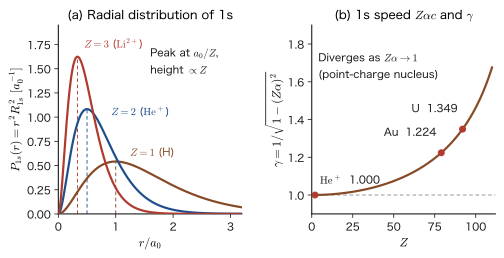
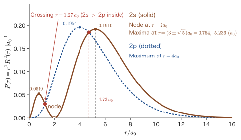
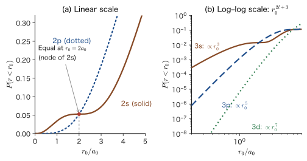
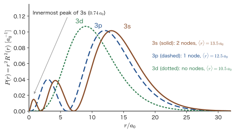
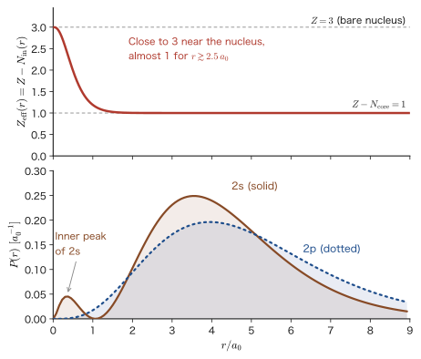
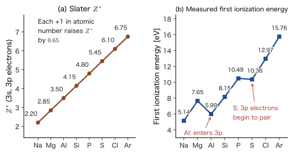
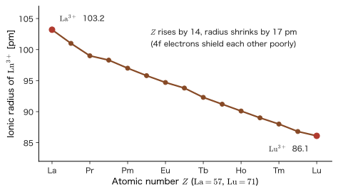

Chapter 18Shielding and Penetration — From Hydrogen-Like Ions to Many-Electron Atoms
Lithium (Li, atomic number 3) has three electrons, but chemically it behaves almost like an “atom with just one electron.” This is because the two inner 1s electrons cancel most of the nuclear charge $+3e_0$, so that the outermost 2s electron feels as if it were moving around a nucleus whose charge is close to $+1$. However, “close to $+1$” is not “exactly $+1$.” The energy needed to strip off the 2s electron of Li (the first ionization energy) is $5.39\ \mathrm{eV}$, much larger than the binding energy $3.40\ \mathrm{eV}$ of the $n=2$ level of the hydrogen atom. Moreover, the binding energy of a 2p electron, which has the same $n=2$, is about $3.5\ \mathrm{eV}$, almost equal to the hydrogen value. In the hydrogen atom, 2s and 2p have the same energy (the degeneracy we saw in the preceding chapters), yet in Li the 2s level lies as much as $1.8\ \mathrm{eV}$ below 2p. Why does such a large difference arise between s and p?
The answer is shielding and penetration, which are two aspects of a single effect. In classical mechanics, no force acts at a point inside a uniform spherical shell, and at a point outside it the force acts as if the entire mass of the shell were at the center (the shell theorem; AD 03, Chapter 8, Section 8.5). The same holds in electrostatics: the cloud of an inner electron acts, for an outer electron, like a negative charge placed at the position of the nucleus, and it cancels the nuclear charge (shielding). In quantum mechanics, however, an electron is not a point but a cloud. Part of the cloud of an outer electron passes through the cloud of the inner electrons and dives in close to the nucleus, where it feels the nearly bare, unshielded nuclear charge (penetration). How far it can dive is determined by the distribution in the radial direction, $P(r)=r^2R^2$ (Chapter 17): the smaller $l$ is, the closer to the nucleus the electron comes. Since 2s shows up nearer the nucleus than 2p, it feels a stronger attraction and has a lower energy.
These two effects explain many properties of materials: the layout of the periodic table, the periodicity of the ionization energies, the flame tests of the alkali metals (red for Li, yellow for Na), the reason that 4s is filled before 3d in K, the reason that the 3d electrons of transition metals behave like inner-shell electrons, the lanthanide contraction, and even the reason that gold looks golden. In this chapter, starting only from the results for hydrogen-like atoms (Chapters 15–17), we put in place the full set of tools for understanding a many-electron atom as a “one-electron problem” plus an “effective nuclear charge”—how to read penetration from the radial distribution, the shell theorem, the effective nuclear charge $Z_{\mathrm{eff}}$, Slater's rules, and the quantum defect. In Part VII (Chapter 34 and others), where we treat many-electron wave functions in earnest, we will use the intuition built here over and over.
- Derive, by a change of variables in the Schrödinger equation, how the wave function, energy, orbital size, and electron speed of a hydrogen-like ion scale when the nuclear charge $Z$ is changed ($E\propto Z^2$, $r\propto1/Z$, $v/c=Z\alpha/n$), and apply the result to He$^+$, Li$^{2+}$, and U$^{91+}$
- Read off from the radial distribution function $P(r)=r^2R^2$ that 2s comes closer to the nucleus than 2p (penetration), and calculate that $P(r\lt r_0)\propto r_0^{2l+3}$ and that the probability inside $r_0=a_0$ is about 9.4 times as large for 2s as for 2p
- Derive shielding and the effective nuclear charge $Z_{\mathrm{eff}}$ from the shell theorem (Gauss's law) as $Z_{\mathrm{eff}}(r)=Z-N_{\mathrm{in}}(r)$, and check it against Li, He, and characteristic X-rays (Moseley's law)
- Calculate the effective nuclear charge $Z^*$ by Slater's rules ($6.25$ for the 3d electrons of Fe and $3.75$ for the 4s electrons), and state how the rules are used and what their limitations are
- Explain by penetration why the $l$ degeneracy of hydrogen is lifted in many-electron atoms ($E_{ns}\lt E_{np}\lt E_{nd}\lt E_{nf}$), and use the quantum defect $\delta_l$ and the Rydberg formula to treat the levels and flame tests of Na and Li. State why 4s is filled before 3d in K
- Understand qualitatively, in the language of shielding and penetration, the lanthanide contraction, the shielding by 4f electrons, and the relativistic effects in a heavy element (Au)
Source notes: Yasuhide Mochizuki, “Physics Notes: Quantum Mechanics 2,” pp. 59–60 (and the related passages on pp. 49, 54, and 56).
How to write electron configurations, and terminology (a preview)
In this chapter, we write the electron configuration of an atom by placing the number of electrons in an orbital at the upper right of the orbital name $nl$. For example, Li is $1s^22s^1$ (two electrons in the 1s orbital and one in the 2s orbital). An electron has two kinds of spin orientation (up ↑ and down ↓; Part IV, Chapter 23), and by the Pauli exclusion principle (Chapter 33), at most two electrons can occupy the same orbital. Therefore s consists of one orbital (holding up to two electrons), p of three orbitals (up to six), d of five (up to 10), and f of seven (up to 14). The filled inner shells are called the core, and the electrons in the outermost shell the valence electrons. A filled configuration identical to that of a noble gas is abbreviated by the element symbol, as in $[\mathrm{Ar}]=1s^22s^22p^63s^23p^6$, $[\mathrm{Kr}]$, and $[\mathrm{Xe}]$. Which orbitals the electrons fill, and in what order, is treated in Chapter 34 (the Madelung rule). In this chapter, we use configurations as given.
18.1 Hydrogen-Like Ions — Scaling with the Nuclear Charge $Z$
18.1.1 Setting up the problem — a nucleus of charge $+Ze_0$ and one electron
An ion obtained by removing $Z-1$ electrons from an atom of atomic number $Z$ (H, $\mathrm{He^+}$, $\mathrm{Li^{2+}}$, $\mathrm{Be^{3+}}$, …) has only one electron, so it poses the same kind of problem as the hydrogen atom. We call these hydrogen-like ions. Let the charge of the nucleus be $+Ze_0$ (this book denotes the elementary charge by $e_0$; it is the same quantity as $e$ in AD 03), and, since the nucleus is much heavier than the electron, regard it as fixed at the origin. Then the stationary states of the electron (mass $m_{\mathrm e}$, charge $-e_0$) satisfy the equation of Chapter 15 with $e_0^2$ replaced by $Ze_0^2$:
\begin{equation} -\frac{\hbar^2}{2m_{\mathrm e}}\nabla^2\psi-\frac{Ze_0^2}{4\pi\varepsilon_0\,r}\,\psi=E\,\psi \label{eq:18-tise} \end{equation}(The correction for the finite mass of the nucleus is given in Section 18.1.5.) The potential $-Ze_0^2/(4\pi\varepsilon_0r)$ is spherically symmetric whatever the value of $Z$. In the separation of variables $\psi=R(r)\,Y_l^m(\theta,\varphi)$, the equation for the angular part does not depend on how the potential depends on $r$, so it is exactly the same as in Chapter 15, and the spherical harmonics $Y_l^m$ do not change when $Z$ changes. $Z$ enters only the radial equation. Therefore, when the nuclear charge is changed from $+e_0$ to $+Ze_0$, only the radial wave function $R_{n,l}(r)$ and the energy $E_n$ change.
Formulas 16.1 and 16.2 of Chapter 16 were written with $Z$ included from the start. Let us confirm their form once more.
\begin{equation} E_n=-\frac{m_{\mathrm e}e_0^4}{8\varepsilon_0^2h^2}\frac{Z^2}{n^2}=-\frac{\hbar^2}{2m_{\mathrm e}a_0^2}\frac{Z^2}{n^2}=-13.606\ \mathrm{eV}\times\frac{Z^2}{n^2},\qquad a_0=\frac{4\pi\varepsilon_0\hbar^2}{m_{\mathrm e}e_0^2} \label{eq:18-En} \end{equation} \begin{equation} R_{n,l}(r)=c_{n,l}\,\frac{e^{-\rho/2}}{r}\sum_{k=2l+1}^{n+l}\frac{(-1)^{k+1}\{(n+l)!\}^2}{(k-2l-1)!\,k!\,(n+l-k)!}\,\rho^{\,k-l},\qquad \rho=\frac{2Zr}{n\,a_0},\quad c_{n,l}=\sqrt{\frac{Z}{a_0}\frac{(n-l-1)!}{n^2\{(n+l)!\}^3}} \label{eq:18-Rnl} \end{equation}Here, the factor $\hbar^2/(2m_{\mathrm e}a_0^2)$ to the right of the second equals sign in Eq. \eqref{eq:18-En} becomes $m_{\mathrm e}e_0^4/\bigl(2(4\pi\varepsilon_0)^2\hbar^2\bigr)$ when the definition of $a_0$ is substituted, which agrees with the first expression. Its dimension is $[\mathrm{J^2\,s^2}]/[\mathrm{kg\,m^2}]=[\mathrm{J}]$, that is, energy.
What we want you to notice in Eq. \eqref{eq:18-Rnl} is that $a_0$ and $Z$ always appear only in the combination $Z/a_0$. There are just two places, the $Z/a_0$ in $\rho$ and the $Z/a_0$ in the normalization constant $c_{n,l}$, and there is no place that contains $Z$ by itself. In other words, multiplying the nuclear charge by $Z$ is the same as replacing the unit of length $a_0$ by $a_0/Z$. Let us show this from a change of variables in the Schrödinger equation itself.
18.1.2 The scaling law — the nuclear charge $Z$ makes the unit of length $a_0/Z$
Derivation: From the equation containing $Z$ to the equation for $Z=1$
[i] Nondimensionalization. Take the length in units of $a_0$ and the energy in units of $E_{\mathrm h}\equiv\hbar^2/(m_{\mathrm e}a_0^2)$ (the Hartree energy; $27.211\ \mathrm{eV}=2\times13.606\ \mathrm{eV}$), and let $s=r/a_0$ and $\varepsilon=E/E_{\mathrm h}$. Since $\nabla^2=a_0^{-2}\nabla_s^2$ ($\nabla_s$ denotes differentiation with respect to $s$), the kinetic energy term becomes $-\dfrac{\hbar^2}{2m_{\mathrm e}}\nabla^2=E_{\mathrm h}\Bigl(-\dfrac12\nabla_s^2\Bigr)$. Using the definition of $a_0$, $\dfrac{e_0^2}{4\pi\varepsilon_0}=\dfrac{\hbar^2}{m_{\mathrm e}a_0}$, the Coulomb term becomes
$$ \frac{Ze_0^2}{4\pi\varepsilon_0\,r}=\frac{Z}{a_0 s}\cdot\frac{\hbar^2}{m_{\mathrm e}a_0}=E_{\mathrm h}\,\frac{Z}{s} $$Dividing Eq. \eqref{eq:18-tise} by $E_{\mathrm h}$ gives
\begin{equation} \Bigl(-\frac12\nabla_s^2-\frac{Z}{s}\Bigr)\psi=\varepsilon\,\psi \label{eq:18-tise-au} \end{equation}an equation that contains no physical constants (this nondimensionalization is called atomic units; we introduce them systematically in Chapter 33).
[ii] Absorb $Z$ into the unit of length. Introduce a new variable $t=Zs=Zr/a_0$. Since $\nabla_s^2=Z^2\nabla_t^2$ and $Z/s=Z^2/t$, Eq. \eqref{eq:18-tise-au} becomes
$$ Z^2\Bigl(-\frac12\nabla_t^2-\frac{1}{t}\Bigr)\psi=\varepsilon\,\psi \qquad\text{that is}\qquad \Bigl(-\frac12\nabla_t^2-\frac{1}{t}\Bigr)\psi=\frac{\varepsilon}{Z^2}\,\psi $$This is the equation for the hydrogen atom with $Z=1$, written in the variable $t$. Its eigenvalue is $\varepsilon/Z^2=-\dfrac{1}{2n^2}$ and its eigenfunction is the wave function $\psi^{(1)}_{nlm}(t,\theta,\varphi)$ for $Z=1$, so we obtain
$$ \varepsilon_n=-\frac{Z^2}{2n^2}\ ,\qquad \psi_{nlm}(r,\theta,\varphi)=C\,\psi^{(1)}_{nlm}\!\left(\frac{Zr}{a_0},\theta,\varphi\right) $$[iii] Normalization. $\displaystyle\int\abs{\psi}^2\dd^3r=\abs{C}^2\int\abs{\psi^{(1)}(Zr/a_0)}^2\dd^3r=\abs{C}^2\Bigl(\frac{a_0}{Z}\Bigr)^3\int\abs{\psi^{(1)}(t)}^2\dd^3t=\abs{C}^2\Bigl(\frac{a_0}{Z}\Bigr)^3$ (the volume element is $\dd^3r=(a_0/Z)^3\dd^3t$). For this to equal $1$ we must have $C=(Z/a_0)^{3/2}$.
∎
On the right-hand sides of the following formula, $\psi^{(1)}(x,\theta,\varphi)$, $R_{n,l}(x;1)$, and $P_{nl}(x;1)$ are the functions of the hydrogen atom with $Z=1$, written with $a_0$ taken as the unit of length (that is, with $a_0=1$), regarded as functions of the dimensionless variable $x=r/a_0$. Therefore their dimensions ($R$ is length to the power $-3/2$ and $P$ is length to the power $-1$) are supplied by the prefactors $(Z/a_0)^{3/2}$ and $Z/a_0$ in front.
Formula 18.1: Scaling of hydrogen-like ions
If the solutions $\psi^{(1)}_{nlm}$, $R_{n,l}(r;1)$, and $E_n(1)$ for the hydrogen atom with $Z=1$ are known, the solutions for nuclear charge $+Ze_0$ are given by the following (the quantum numbers $n,l,m$ do not change).
\begin{equation} \psi_{nlm}(r,\theta,\varphi)=\Bigl(\frac{Z}{a_0}\Bigr)^{3/2}\psi^{(1)}_{nlm}\!\Bigl(\frac{Zr}{a_0},\theta,\varphi\Bigr),\qquad R_{n,l}(r;Z)=\Bigl(\frac{Z}{a_0}\Bigr)^{3/2}R_{n,l}\!\Bigl(\frac{Zr}{a_0};1\Bigr),\qquad E_n(Z)=Z^2E_n(1) \label{eq:18-scale} \end{equation}As a result, the radial distribution function (Section 18.2) and the expectation values of lengths scale as follows.
\begin{equation} P_{nl}(r;Z)=r^2R_{n,l}(r;Z)^2=\frac{Z}{a_0}\,P_{nl}\!\Bigl(\frac{Zr}{a_0};1\Bigr),\qquad \expval{r^k}_{Z}=\Bigl(\frac{1}{Z}\Bigr)^{k}\expval{r^k}_{Z=1}\ ,\qquad \expval{r}_{nl}=\frac{a_0}{2Z}\bigl\{3n^2-l(l+1)\bigr\} \label{eq:18-Pscale} \end{equation}The positions of the nodes (the values of $r$ at which $R_{n,l}$ is $0$) are also $1/Z$ times their values for $Z=1$.
The last equation of Eq. \eqref{eq:18-Pscale} is a rearrangement of the general formula of Chapter 17, $\expval{r}_{n,l}=\frac{a_0}{Z}\,n^2\bigl\{1+\frac12\bigl(1-\frac{l(l+1)}{n^2}\bigr)\bigr\}$. Also, by scaling, the maximum value of $P_{nl}(r;Z)$ is $Z$ times its value for $Z=1$, and its position is $1/Z$ times the position in hydrogen.

18.1.3 How size, energy, and speed vary with $Z$
From Formula 18.1, the changes that occur when $Z$ is increased can be summarized as follows.
- The size scales by $1/Z$: the spread of the electron distribution ($\expval{r}$, the most probable position, the positions of the nodes) shrinks in every case to $1/Z$ times that of hydrogen. The larger the charge of the nucleus, the more strongly the electron is attracted and the closer it comes to the nucleus. For the 1s orbital, $\expval{r}_{1s}=\dfrac{3a_0}{2Z}$ and the most probable radius is $a_0/Z$.
- The energy scales by $Z^2$: $E_n\propto Z^2$. Intuitively, if the electron is confined to a radius $\sim a_0/Z$, the uncertainty principle makes the momentum $\sim Z\hbar/a_0$, so the kinetic energy is $\sim Z^2\hbar^2/(2m_{\mathrm e}a_0^2)$. On the other hand, the potential energy is $-Ze_0^2/(4\pi\varepsilon_0r)\sim-Z\cdot Z\,e_0^2/(4\pi\varepsilon_0a_0)$, which is also proportional to $Z^2$. Since both are proportional to $Z^2$, the total energy is also proportional to $Z^2$ (the virial theorem; Chapter 17, Section 17.4).
- The electron's speed scales by $Z$: from $\expval{T}=-E_n=\dfrac{\hbar^2}{2m_{\mathrm e}a_0^2}\dfrac{Z^2}{n^2}$ (the virial theorem), the mean square of the momentum is
(The second equals sign uses $\hbar/a_0=m_{\mathrm e}e_0^2/(4\pi\varepsilon_0\hbar)=m_{\mathrm e}e_0^2/(2\varepsilon_0h)$.) $\expval{p^2}$ is determined by $n$ and $Z$ alone, independent of $l$. The expectation value of the momentum vector itself, $\expval{\bm{p}}$, is $\bm{0}$, because the electron moves while changing its direction (Chapter 17, Section 17.1.6). As a measure of the speed we use the square root of the mean square of the magnitude of the momentum, $\sqrt{\expval{p^2}}$, and write $v\equiv\sqrt{\expval{p^2}}/m_{\mathrm e}$. Using the fine-structure constant $\alpha=\dfrac{e_0^2}{4\pi\varepsilon_0\hbar c}\approx\dfrac{1}{137.036}$, since $\hbar/(m_{\mathrm e}a_0)=\alpha c$, we have
\begin{equation} v=\frac{\sqrt{\expval{p^2}}}{m_{\mathrm e}}=\frac{Z\hbar}{n\,m_{\mathrm e}a_0}=\frac{Z\alpha}{n}\,c=\frac{e_0^2Z}{2\varepsilon_0hn}\qquad\Bigl(\text{hydrogen 1s: }v=\alpha c=2.1877\times10^6\ \mathrm{m/s}\Bigr) \label{eq:18-v} \end{equation}The larger the charge of the nucleus, the faster the electron moves. In particular, for an inner-shell 1s electron ($n=1$), $v/c=Z\alpha$, which in heavy elements approaches a non-negligible fraction of the speed of light.
In special relativity, the mass of an electron moving with speed $v$ is $m=m_{\mathrm e}/\sqrt{1-(v/c)^2}=\gamma\,m_{\mathrm e}$ (AD 03, Chapter 54, Section 54.6 (in Japanese), Chapter 57, Section 57.6 (in Japanese)). As the speed increases the mass increases, and since the Bohr radius satisfies $a_0\propto1/m_{\mathrm e}$, the orbit shrinks and the levels become deeper (this is a crude estimate in which the speed is held fixed and only the mass is replaced; strictly, the problem is treated with the Dirac equation, Chapter 63). The calculations in this book so far were done with the nonrelativistic Schrödinger equation, assuming $v\ll c$, so they can be trusted only as long as $Z\alpha$ is small. Figure 18.1(b) shows how $\gamma$ of a 1s electron increases with the atomic number. For light elements $\gamma\approx1$, but for Au and U it deviates from 1 by as much as $20$–$35\ \%$. We will see in Section 18.6 that this relativistic effect plays a role in the properties of materials (the color of gold and the liquid state of mercury).
Example 18.1: The 1s electron of $\mathrm{He^+}$, $\mathrm{Li^{2+}}$, and $\mathrm{U^{91+}}$
For the 1s states of the hydrogen-like ions $\mathrm{He^+}$ ($Z=2$), $\mathrm{Li^{2+}}$ ($Z=3$), and $\mathrm{U^{91+}}$ ($Z=92$), find the energy $E_1$, the mean radius $\expval{r}_{1s}$, and the estimate of the electron's speed $v/c$. For $\mathrm{U^{91+}}$, also state how far the nonrelativistic calculation can be trusted. Take $a_0=52.918\ \mathrm{pm}$, $E_1(1)=-13.606\ \mathrm{eV}$, and $\alpha=1/137.036$.
Solution. Use Formula 18.1 and Eq. \eqref{eq:18-v} with $n=1,\ l=0$. $\expval{r}_{1s}=\dfrac{3a_0}{2Z}$ (Eq. \eqref{eq:18-Pscale} with $n=1,\ l=0$: $\dfrac{a_0}{2Z}\cdot3$), $E_1=-13.606\,Z^2\ \mathrm{eV}$, $v/c=Z\alpha$.
- $\mathrm{He^+}$: $E_1=-13.606\times4=-54.42\ \mathrm{eV}$. $\expval{r}=\dfrac{3\times52.918}{2\times2}=39.69\ \mathrm{pm}$. $v/c=\dfrac{2}{137.036}=0.0146$.
- $\mathrm{Li^{2+}}$: $E_1=-13.606\times9=-122.45\ \mathrm{eV}$. $\expval{r}=\dfrac{3\times52.918}{2\times3}=26.46\ \mathrm{pm}$. $v/c=\dfrac{3}{137.036}=0.0219$.
- $\mathrm{U^{91+}}$: $E_1=-13.606\times92^2=-13.606\times8464=-1.152\times10^5\ \mathrm{eV}=-115.2\ \mathrm{keV}$. $\expval{r}=\dfrac{3\times52.918}{2\times92}=0.863\ \mathrm{pm}$. $v/c=\dfrac{92}{137.036}=0.671$.
For $\mathrm{U^{91+}}$ the speed of the 1s electron reaches $2/3$ of the speed of light, so the nonrelativistic values cannot be trusted. Solving the Dirac equation (Chapter 62, Chapter 63) for a point-charge nucleus, the 1s binding energy is $m_{\mathrm e}c^2\bigl\{1-\sqrt{1-(Z\alpha)^2}\bigr\}=511.0\ \mathrm{keV}\times\{1-\sqrt{1-0.4507}\}=511.0\times0.2589=132.3\ \mathrm{keV}$, which is about $15\ \%$ larger than the nonrelativistic value of $115.2\ \mathrm{keV}$. On the other hand, the relativistic corrections for $\mathrm{He^+}$ and $\mathrm{Li^{2+}}$ are of order $(Z\alpha)^2\sim10^{-4}$ and may be neglected.
Example 18.2: The relativistic mass of the Au 1s electron and the contraction of the Bohr radius
For the 1s electron of gold (Au, $Z=79$), the speed estimate $v/c$ and $\gamma=1/\sqrt{1-(v/c)^2}$ were found in Example 17.3 of Chapter 17 ($v/c=Z\alpha=0.5765$, $\gamma=1.224$). Using these values, estimate how much the Bohr radius shrinks because of the increase in mass.
Solution. From $\gamma=1.224$, the mass becomes $1.224$ times the rest mass (an increase of about $22\ \%$). The Bohr radius $a_0=4\pi\varepsilon_0\hbar^2/(m_{\mathrm e}e_0^2)$ is inversely proportional to the mass, so replacing $m_{\mathrm e}\to\gamma m_{\mathrm e}$ gives $a_0\to a_0/\gamma$; that is, it shrinks by the factor $1/\gamma=0.817$ (a contraction of about $18\ \%$). This is a crude estimate in which the speed is held fixed and only the mass is replaced, but the qualitative conclusion that s orbitals contract relativistically is unchanged in the treatment by the Dirac equation in Chapter 63. How this contraction affects the color of gold is described in Section 18.6.3.
18.1.4 Table of wave functions containing $Z$
Using Formula 18.1, we can write the table of wave functions of Chapter 16 directly in a form containing $Z$. The density at the position of the nucleus, $\abs{\psi_{ns}(0)}^2=Z^3/(\pi n^3a_0^3)$, is proportional to the cube of $Z$. With $\rho=2Zr/(na_0)$, we write down the first three.
\begin{align} \psi_{1s}&=\frac{1}{\sqrt{\pi}}\Bigl(\frac{Z}{a_0}\Bigr)^{3/2}e^{-Zr/a_0}\ ,\qquad \psi_{2s}=\frac{1}{4\sqrt{2\pi}}\Bigl(\frac{Z}{a_0}\Bigr)^{3/2}\Bigl(2-\frac{Zr}{a_0}\Bigr)e^{-Zr/2a_0}\ ,\notag\\ \psi_{2p_z}&=\frac{1}{4\sqrt{2\pi}}\Bigl(\frac{Z}{a_0}\Bigr)^{3/2}\frac{Zr}{a_0}\,e^{-Zr/2a_0}\cos\theta \label{eq:18-psi-Z} \end{align}(For $n=2$, $\rho=Zr/a_0$; for $n=1$, $\rho/2=Zr/a_0$.) The 3s, 3p, and 3d functions are similar: in the table of Chapter 16, it suffices to replace $r/a_0$ by $Zr/a_0$ and $a_0^{-3/2}$ by $(Z/a_0)^{3/2}$. For example, with $x=Zr/a_0$, we have
\begin{align} \psi_{3s}&=\frac{1}{81\sqrt{3\pi}}\Bigl(\frac{Z}{a_0}\Bigr)^{3/2}\bigl(27-18x+2x^2\bigr)e^{-x/3}\ ,\qquad \psi_{3p_z}=\frac{\sqrt2}{81\sqrt{\pi}}\Bigl(\frac{Z}{a_0}\Bigr)^{3/2}x\,(6-x)\,e^{-x/3}\cos\theta\ ,\notag\\ \psi_{3d_{z^2}}&=\frac{1}{81\sqrt{6\pi}}\Bigl(\frac{Z}{a_0}\Bigr)^{3/2}x^2e^{-x/3}\,(3\cos^2\theta-1) \label{eq:18-psi3-Z} \end{align}(Using $\rho=2x/3$, we can also write $\psi_{3s}=\dfrac{1}{18\sqrt{3\pi}}\bigl(\dfrac{Z}{a_0}\bigr)^{3/2}(6-6\rho+\rho^2)e^{-\rho/2}$.) It suffices to remember that the role played by $a_0$ in $R_{n,l}$ is taken over by $a_0/Z$ when $Z$ changes.
18.1.5 Scalings other than $Z$ — reduced mass
Application: The same scaling occurs when the reduced mass is changed
When the mass of the nucleus is finite ($M$), it suffices to replace $m_{\mathrm e}$ by the reduced mass $\mu=m_{\mathrm e}M/(m_{\mathrm e}+M)$ (Chapter 15, Section 15.1). The system then scales as $a_0\to a_0m_{\mathrm e}/\mu$ and $E_n\to E_n\,\mu/m_{\mathrm e}$. An increase of the nuclear charge and an increase of the mass play the same role of “binding the electron more strongly to the nucleus.” Concrete numerical values for systems with a changed mass (muonic hydrogen, positronium) and for hydrogen-like systems inside a material with a large permittivity (excitons in semiconductors) are given in Chapter 15, Section 15.6.6 (Examples 15.12 and 15.13).
18.2 “Penetration” as Told by the Radial Distribution Function — 2s Comes Closer to the Nucleus than 2p
18.2.1 The radial distribution function — the probability of finding the electron in a thin spherical shell at distance $r$ from the nucleus
To find out how far from the atomic nucleus the electron is, we use the radial distribution function introduced in Chapter 17. Let us define it once more.
Definition 18.1: Radial distribution function
For an electron in the state $\psi_{nlm}=R_{n,l}(r)\,Y_l^m(\theta,\varphi)$ of a hydrogen-like atom, the probability of finding it in a thin spherical shell between distances $r$ and $r+\dd r$ from the nucleus can be written as $P_{nl}(r)\,\dd r$, because the angular part is normalized as $\displaystyle\int\abs{Y_l^m}^2\sin\theta\,\dd\theta\,\dd\varphi=1$.
\begin{equation} P_{nl}(r)\equiv r^2R_{n,l}(r)^2\qquad\Bigl(\int_0^\infty P_{nl}(r)\,\dd r=1\Bigr) \label{eq:18-Pdef} \end{equation}This quantity is called the radial distribution function of $(n,l)$. The factor $r^2$ comes from the fact that the volume of a spherical shell of radius $r$ is $4\pi r^2\dd r$. $P_{nl}$ does not depend on $m$, and it has the dimension of the reciprocal of a length.
$R_{n,l}(r)^2$ is the probability (its radial part) per unit volume around the position $r$, and $P_{nl}(r)=r^2R_{n,l}^2$ is that quantity lumped together over the whole sphere of the same radius and turned into a probability per unit length. In a place close to the nucleus, even if $R^2$ is large, the volume of the spherical shell is small, so it contributes little to $P$. When we discuss the probability in the region close to the nucleus, we must not forget the effect of this $r^2$.
18.2.2 The radial distribution functions of 2s and 2p
First we compare the two subshells of $n=2$, 2s ($l=0$) and 2p ($l=1$). The radial functions of the hydrogen atom ($Z=1$), in the standard form that is positive near the origin, are
\begin{equation} R_{2,0}(r)=\frac{1}{2\sqrt2}\,a_0^{-3/2}\Bigl(2-\frac{r}{a_0}\Bigr)e^{-r/2a_0},\qquad R_{2,1}(r)=\frac{1}{2\sqrt6}\,a_0^{-3/2}\,\frac{r}{a_0}\,e^{-r/2a_0} \label{eq:18-R2} \end{equation}(Chapter 16, Section 16.2, Section 16.3). We square these and multiply by $r^2$. Since $R_{2,0}^2=\dfrac{1}{8a_0^3}\dfrac{(2a_0-r)^2}{a_0^2}e^{-r/a_0}=\dfrac{(r-2a_0)^2}{8a_0^5}e^{-r/a_0}$ (note that $(2-r/a_0)^2=(2a_0-r)^2/a_0^2=(r-2a_0)^2/a_0^2$) and $R_{2,1}^2=\dfrac{1}{24a_0^3}\dfrac{r^2}{a_0^2}e^{-r/a_0}=\dfrac{r^2}{24a_0^5}e^{-r/a_0}$, we obtain
Formula 18.2: Radial distribution functions of 2s and 2p
\begin{equation} P_{2,0}(r)=r^2R_{2,0}(r)^2=\frac{1}{8a_0^5}\,r^2\,(r-2a_0)^2\,e^{-r/a_0},\qquad P_{2,1}(r)=r^2R_{2,1}(r)^2=\frac{1}{24a_0^5}\,r^4\,e^{-r/a_0} \label{eq:18-P2} \end{equation}For nuclear charge $Ze_0$, by Formula 18.1, it suffices to replace $r$ on the right-hand side by $Zr$ and multiply the whole by $Z$ (leaving $a_0$ as it is).
Figure 18.2 shows these two functions. The 2s is drawn as a solid line and the 2p as a dotted line.

From this figure we can read off the following.
- The 2p falls off steeply near the nucleus ($P_{2,1}\propto r^4$) and has just one peak, at $r=4a_0$. It has no node.
- The 2s is much larger than the 2p very close to the nucleus ($r\lesssim1.3a_0$; $P_{2,0}\approx r^2/(2a_0^3)$, which rises with a lower power than the $r^4$ of the 2p). Rising from the origin, it forms a small peak at $0.764a_0$ and becomes $0$ at $r=2a_0$ (a node; $R_{2,0}$ changes sign). Outside that there is a large main peak at $5.236\,a_0$, which lies even farther out than the peak of the 2p ($4a_0$).
- The heights of the main peak of the 2s and the peak of the 2p are almost equal ($0.191$ and $0.195$).
Example 18.3: Finding the maxima and the node of 2s from the formula
Find the positions and heights of the maxima of $P_{2,0}$ and $P_{2,1}$ in Formula 18.2, and the node of $P_{2,0}$. Further, find where the two curves $P_{2,0}$ and $P_{2,1}$ cross, and state where the 2s is larger (in units of $a_0=1$).
Solution. Set $a_0=1$ and write $P_{2,0}=\dfrac18\,f(r)^2e^{-r}$, with $f(r)\equiv r(r-2)=r^2-2r$. By the product rule,
$$ \frac{\dd P_{2,0}}{\dd r}=\frac18\Bigl(2ff'e^{-r}-f^2e^{-r}\Bigr)=\frac18\,f\,\bigl(2f'-f\bigr)e^{-r} $$Since $f'=2r-2$, we have $2f'-f=4r-4-r^2+2r=-(r^2-6r+4)$. Hence the solutions of $\dd P_{2,0}/\dd r=0$ are $f=0$ ($r=0,\ 2$; here $P_{2,0}=0$, so these are minima, that is, nodes) and $r^2-6r+4=0$ ($r=3\pm\sqrt5$). The position of the node is $r=2a_0$, where $R_{2,0}\propto(2-r)$ becomes $0$, and $P_{2,0}$ becomes $0$ there (a minimum that is concave up). The maxima are at $r_-=3-\sqrt5=0.7639$ and $r_+=3+\sqrt5=5.2361$, and their heights are
$$ P_{2,0}(r_-)=\frac{1}{8}(0.7639)^2(0.7639-2)^2e^{-0.7639}=\frac18\times0.5836\times1.5279\times0.4658=0.0519,\qquad P_{2,0}(r_+)=\frac{1}{8}(5.2361)^2(3.2361)^2e^{-5.2361}=\frac18\times27.416\times10.472\times0.005321=0.1910 $$(in units of $a_0^{-1}$). The function $P_{2,1}=\dfrac{1}{24}r^4e^{-r}$ has its maximum where $\dfrac{\dd P_{2,1}}{\dd r}=\dfrac{1}{24}(4r^3-r^4)e^{-r}=\dfrac{1}{24}r^3(4-r)e^{-r}$ becomes $0$, namely at $r=4$ ($r=0$ is the minimum), and its height is $P_{2,1}(4)=\dfrac{4^4e^{-4}}{24}=\dfrac{256}{24}\times0.018316=0.1954$.
From the above, we have confirmed that the main peak of the 2s is at $5.236a_0$ with height $0.191$ and the peak of the 2p is at $4a_0$ with height $0.195$, so the heights are almost equal.
The crossing points follow from $P_{2,0}=P_{2,1}$, that is, from $\dfrac18r^2(r-2)^2e^{-r}=\dfrac1{24}r^4e^{-r}$. Dividing both sides by $r^2e^{-r}/24$ gives $3(r-2)^2=r^2$, that is, $\sqrt3\,\lvert r-2\rvert=r$. For $r\lt2$, $\sqrt3(2-r)=r$ gives $r=\dfrac{2\sqrt3}{1+\sqrt3}=1.268$, and for $r\gt2$, $\sqrt3(r-2)=r$ gives $r=\dfrac{2\sqrt3}{\sqrt3-1}=4.732$. For $r\lt1.268a_0$ and $r\gt4.732a_0$ the 2s is larger, and for $1.268a_0\lt r\lt4.732a_0$ the 2p is larger (for example, at $r=1.5a_0$, the 2s gives $0.0157$ and the 2p gives $0.0471$). Note that the 2s exceeds the 2p only very close to the nucleus.
18.2.3 “Penetration” — the probability of being found close to the nucleus is higher for an s orbital
Looking at Figure 18.2, we see that in the region very close to the proton (the atomic nucleus) ($r\lesssim1.27a_0$; the crossing point of the two curves is $r=2\sqrt3\,a_0/(1+\sqrt3)=1.27a_0$, Example 18.3), the curve of the 2s lies far above that of the 2p. That is, the probability of finding the electron close to the proton is higher for the 2s orbital than for the 2p orbital. Outside the crossing point, for $1.27a_0\lt r\lt2a_0$, the 2s goes to $0$ toward the node ($r=2a_0$), so the 2p is larger. However, if we compare the cumulative probability $P(r\lt r_0)$ from the origin to $r_0$, the 2s is larger over the entire range $r_0\lt2a_0$ (Example 18.4). This means that an electron in the 2s orbital is present more abundantly than an electron in the 2p orbital in places where it is strongly attracted to the nucleus. This property is called penetration.
Definition 18.2: Penetration
The property that the distribution of an electron passes through the clouds of the electrons lying inside it (the inner shells) and reaches close to the atomic nucleus is called penetration. Among subshells with the same principal quantum number $n$, the smaller the azimuthal quantum number $l$, the greater the penetration: they penetrate in the order $ns>np>nd>nf$.
Even when there are no inner shells, as in the hydrogen atom, a large probability $P(r\lt r_0)$ (Formula 18.3) of finding the electron close to the nucleus ($r\lt r_0$) is said to mean large penetration. In a many-electron atom, this region lies inside the clouds of the inner-shell electrons, so an electron there escapes shielding (Section 18.3).
Why can an electron get closer to the nucleus the smaller $l$ is? As we saw in Chapter 14, an electron with angular momentum is acted on by the centrifugal potential $\hbar^2l(l+1)/(2m_{\mathrm e}r^2)$. This is the same as the effective potential of classical mechanics (AD 03, Chapter 8, Section 8.4). It is a repulsive force that grows steeply as $r$ becomes smaller, and it prevents an electron with $l\ge1$ from entering the neighborhood of the nucleus. In the language of classical Kepler motion, the smaller the angular momentum of an elliptical orbit, the closer its perihelion (the point closest to the nucleus) is to the center, and in the limit $l\to0$ the orbit becomes a long, thin ellipse that passes through the center. Since the s orbital ($l=0$) has no centrifugal barrier, the electron can reach the immediate vicinity of the nucleus. This fact appears exactly in the behavior as $r\to0$, as in the following formula.
Formula 18.3: The radial function near the origin, and the probability inside a sphere near the nucleus
Near the origin ($r\ll na_0/Z$), the $R_{n,l}$ of a hydrogen-like atom behaves as $R_{n,l}(r)\approx C_{n,l}\,r^{\,l}$, with
\begin{equation} C_{n,l}=\frac{1}{(2l+1)!}\Bigl(\frac{2Z}{na_0}\Bigr)^{l+3/2}\sqrt{\frac{(n+l)!}{2n\,(n-l-1)!}} \label{eq:18-C} \end{equation}Therefore the radial distribution is $P_{nl}(r)\approx C_{n,l}^2\,r^{2l+2}$, and the probability of finding the electron inside a sphere of radius $r_0$ is
\begin{equation} P(r\lt r_0)=\int_0^{r_0}P_{nl}(r)\,\dd r\approx\frac{C_{n,l}^2}{2l+3}\,r_0^{\,2l+3}\qquad(r_0\ll na_0/Z) \label{eq:18-Pnear} \end{equation}That is, the probability of entering a sphere near the nucleus is proportional to $r_0^{2l+3}$, and each time $l$ increases by 1 it becomes smaller, being multiplied by $r_0^2$.
Derivation: Eq. \eqref{eq:18-C} and Eq. \eqref{eq:18-Pnear}
We use the standard form of Chapter 16, $R_{n,l}=\sqrt{\bigl(\tfrac{2Z}{na_0}\bigr)^3\tfrac{(n-l-1)!}{2n\,(n+l)!}}\;e^{-\rho/2}\rho^{\,l}L_{n-l-1}^{(2l+1)}(\rho)$, $\rho=2Zr/(na_0)$. As $r\to0$, $e^{-\rho/2}\to1$, and the value of the associated Laguerre polynomial is $L_p^{(\alpha)}(0)=\dbinom{p+\alpha}{p}$, so setting $p=n-l-1$ and $\alpha=2l+1$, we obtain $L_{n-l-1}^{(2l+1)}(0)=\dfrac{(n+l)!}{(n-l-1)!\,(2l+1)!}$. Combining this with $\rho^l=(2Z/na_0)^lr^l$, we get
$$ C_{n,l}=\Bigl(\frac{2Z}{na_0}\Bigr)^{3/2+l}\sqrt{\frac{(n-l-1)!}{2n\,(n+l)!}}\cdot\frac{(n+l)!}{(n-l-1)!\,(2l+1)!}=\frac{1}{(2l+1)!}\Bigl(\frac{2Z}{na_0}\Bigr)^{l+3/2}\sqrt{\frac{(n+l)!}{2n\,(n-l-1)!}} $$(we used that the factor $(n-l-1)!/(n+l)!$ inside the $\sqrt{x}$ and the outer factor $(n+l)!/(n-l-1)!$ multiply to give $\sqrt{(n+l)!/(n-l-1)!}$). Next, integrating $P_{nl}=r^2R^2\approx C^2r^{2l+2}$ from $0$ to $r_0$ gives $C^2r_0^{2l+3}/(2l+3)$.
∎
Let us check Formula 18.3 with the 2s and the 2p. For $Z=1$ and $a_0=1$, Eq. \eqref{eq:18-C} gives, for the 2s ($n=2,l=0$), $C_{2,0}=\bigl(\tfrac{2}{2}\bigr)^{3/2}\sqrt{\tfrac{2!}{4\cdot1!}}=\tfrac{1}{\sqrt2}$, and for the 2p ($n=2,l=1$), $C_{2,1}=\tfrac{1}{3!}\bigl(\tfrac22\bigr)^{5/2}\sqrt{\tfrac{3!}{4\cdot0!}}=\tfrac16\sqrt{\tfrac32}=\tfrac{1}{2\sqrt6}$, which agree with the coefficients of Eq. \eqref{eq:18-R2} as $r\to0$ ($R_{2,0}(0)=1/\sqrt2$, $R_{2,1}\approx r/(2\sqrt6)$). Therefore $P(r\lt r_0)\approx\dfrac{r_0^3}{6}$ (2s) and $\dfrac{r_0^5}{120}$ (2p). The ratio of the 2s to the 2p is $P_{2s}/P_{2p}\approx20\,a_0^2/r_0^2$, which grows rapidly as we approach the nucleus. However, this expression is an approximation valid when $r_0$ is sufficiently small: for $r_0=0.5a_0$ it gives about 80 times and for $r_0=a_0$ about 20 times, which are larger than the exact values in the next example (56 times and 9.4 times).
Example 18.4: Quantifying penetration — the probability of being inside a sphere of radius $r_0$
For the 2s and 2p states of the hydrogen atom, find the exact expression for the probability $P(r\lt r_0)$ of finding the electron inside a sphere of radius $r_0$, and find its values for $r_0=0.5a_0$ and $a_0$ together with the ratio of the 2s value to the 2p value. Also, comparing the probabilities of 2s and 2p, up to what value of $r_0$ is the 2s probability the larger?
Solution. Set $a_0=1$ and write $x=r_0$. Let $S_m\equiv\sum_{j=0}^{m}x^j/j!$ (so that $S_m'=S_{m-1}$ and $S_m-S_{m-1}=x^m/m!$). We use the integral formula
$$ \int_0^{x}r^ke^{-r}\dd r=k!\bigl\{1-e^{-x}S_k\bigr\} $$This formula can be checked by differentiating both sides with respect to $x$. The derivative of the left-hand side is $x^ke^{-x}$, and the derivative of the right-hand side is $k!\,e^{-x}(S_k-S_k')=k!\,e^{-x}(S_k-S_{k-1})=k!\,e^{-x}\dfrac{x^k}{k!}=x^ke^{-x}$, so the two agree, and both sides are $0$ at $x=0$ (the formula can also be obtained by repeating integration by parts $k$ times).
2p: Since $P_{2,1}=\dfrac{r^4e^{-r}}{24}$, we have $P_{2p}(\lt x)=\dfrac{1}{24}\cdot4!\{1-e^{-x}S_4\}=1-e^{-x}S_4$.
2s: Since $P_{2,0}=\dfrac18(r^4-4r^3+4r^2)e^{-r}$,
$$ P_{2s}(\lt x)=\frac18\Bigl[4!\{1-e^{-x}S_4\}-4\cdot3!\{1-e^{-x}S_3\}+4\cdot2!\{1-e^{-x}S_2\}\Bigr] =1-e^{-x}\bigl(3S_4-3S_3+S_2\bigr) $$(We used $24-24+8=8$ and $8/8=1$.) Since $S_4-S_3=x^4/24$, we have $3S_4-3S_3+S_2=3\cdot\dfrac{x^4}{24}+S_2=\dfrac{x^4}{8}+1+x+\dfrac{x^2}{2}$, and therefore
\begin{equation} P_{2s}(\lt r_0)=1-e^{-r_0}\Bigl(1+r_0+\frac{r_0^2}{2}+\frac{r_0^4}{8}\Bigr),\qquad P_{2p}(\lt r_0)=1-e^{-r_0}\Bigl(1+r_0+\frac{r_0^2}{2}+\frac{r_0^3}{6}+\frac{r_0^4}{24}\Bigr) \label{eq:18-cum2} \end{equation}Here $r_0$ is measured in units of $a_0$. Now we insert numerical values.
$r_0=0.5$: $e^{-0.5}=0.60653$. $P_{2s}=1-0.60653\times(1+0.5+0.125+0.0078125)=1-0.60653\times1.6328=0.00965$. $P_{2p}=1-0.606531\times(1+0.5+0.125+0.020833+0.0026042)=1-0.606531\times1.648438=1.72\times10^{-4}$ (this is a subtraction of numbers very close to 1, so beware of loss of significance and carry extra digits in the calculation). The ratio is $0.00965/1.72\times10^{-4}=56$, that is, a factor of 56.
$r_0=1$: $e^{-1}=0.36788$. $P_{2s}=1-0.36788\times(1+1+0.5+0.125)=1-0.36788\times2.625=0.0343$. $P_{2p}=1-0.36788\times(1+1+0.5+0.16667+0.041667)=1-0.36788\times2.7083=0.00366$. The ratio is $9.4$, that is, a factor of 9.4.
Taking the difference of the two, Eq. \eqref{eq:18-cum2} gives $P_{2s}-P_{2p}=e^{-r_0}\bigl(\tfrac{r_0^3}{6}+\tfrac{r_0^4}{24}-\tfrac{r_0^4}{8}\bigr)=\dfrac{r_0^3(2-r_0)}{12}\,e^{-r_0}$. This is positive for $r_0\lt2a_0$, $0$ for $r_0=2a_0$, and negative for $r_0\gt2a_0$. In other words, 2s is the larger for $r_0\lt2a_0$, that is, up to the radius of the 2s node; the two are exactly equal at $r_0=2a_0$ ($0.0527$), and outside that radius the probability of being inside the sphere is larger for 2p.
Figure 18.3 shows this result graphically. Carrying out the same calculation for 3s, 3p, and 3d gives the values in Table 18.1. Each time $l$ increases by 1, the probability of being inside the inner sphere becomes smaller by orders of magnitude.
| Orbital | $r_0=0.5\,a_0$ | $r_0=a_0$ | Behavior as $r_0\to0$ |
|---|---|---|---|
| 2s | $9.65\times10^{-3}$ | $3.43\times10^{-2}$ | $r_0^3/6$ |
| 2p | $1.72\times10^{-4}$ | $3.66\times10^{-3}$ | $r_0^5/120$ |
| 3s | $2.84\times10^{-3}$ | $9.87\times10^{-3}$ | $\propto r_0^3$ |
| 3p | $6.0\times10^{-5}$ | $1.26\times10^{-3}$ | $\propto r_0^5$ |
| 3d | $6.8\times10^{-8}$ | $6.5\times10^{-6}$ | $\propto r_0^7$ |

18.2.4 The order reverses for the mean radius — is 2s farther out than 2p?
Here is a fact that seems contradictory at first sight. Let us line up the mean radii $\expval{r}_{nl}=\dfrac{a_0}{2Z}\{3n^2-l(l+1)\}$ calculated in Chapter 17.
Illustration 18.1: $\expval{r}$ within the same shell — the smaller $l$ is, the farther out the average lies
Using Eq. \eqref{eq:18-Pscale} with $Z=1$, we obtain
$$ \expval{r}_{2s}=6a_0,\quad\expval{r}_{2p}=5a_0;\qquad \expval{r}_{3s}=13.5\,a_0,\quad\expval{r}_{3p}=12.5\,a_0,\quad\expval{r}_{3d}=10.5\,a_0 $$(the corresponding values are $1.5a_0$ for 1s and $24a_0$ for 4s). The larger $l$ is (the larger the angular momentum), the smaller the mean radius is within the same $n$: $\expval{r}_{3d}\lt\expval{r}_{3p}\lt\expval{r}_{3s}$. Figure 18.4 expresses this by concentric circles whose radii are $\expval{r}$ (the same figure as Figure 17.4 of Chapter 17).
“2s lies farther out than 2p,” and yet “2s is also found closer to the nucleus than 2p.” These two statements do not contradict each other. Both are consequences of the fact that the radial distribution of 2s has a double-peaked shape. The quantity $\expval{r}$ is something like the center of gravity of the whole distribution, and it is determined, to a good approximation, by the position of the large outer peak, which holds most of the probability. The outer peak of 2s lies farther out than the peak of 2p ($5.24a_0$ versus $4a_0$). The reason can be understood intuitively as follows (strictly speaking, it follows from the result of Eq. \eqref{eq:18-Pscale}: the more s-like an orbital is, the smaller its centrifugal barrier and the larger its number of nodes, so it spreads outward). The 2s orbital must be orthogonal to 1s (Chapter 16). Since 1s is concentrated near the nucleus, 2s reverses its sign near the nucleus (forms a node) to be orthogonal to the inner 1s, and at the price of this, the remaining probability is pushed outward. In contrast, 2p needs no node to be made orthogonal to 1s and can remain spread inward. The small peak near the nucleus is small as a probability (the total probability for $r\lt2a_0$ is about $5\ \%$ for both 2s and 2p), but there the Coulomb potential of the nucleus ($\propto1/r$) is strong and the contribution to the energy is large (Sections 18.3 and 18.5).

Why does penetration lower the energy?
In the hydrogen atom, $\expval{1/r}_{nl}=Z/(n^2a_0)$ is determined by $n$ alone, independently of $l$ (and $\expval{V}=-\dfrac{Ze_0^2}{4\pi\varepsilon_0}\expval{1/r}$ is also independent of $l$). Therefore 2s and 2p have the same energy even though their penetration differs. This is the true nature of the $l$ degeneracy (Coulomb degeneracy) of the hydrogen atom. However, the situation changes once the potential of the atomic nucleus is no longer exactly $-1/r$ (because of the shielding by the inner electron cloud, $Z_{\mathrm{eff}}$ in $-Z_{\mathrm{eff}}(r)/r$ decreases with $r$). Since $Z_{\mathrm{eff}}$ is large only in the region close to the nucleus, the more electron density an orbital (an s orbital, in particular) has in that region, the more its potential energy is lowered. Although the potential looks like the same $-1/r$ from far away, an orbital with greater penetration goes deeper into the well that has become deeper only near the nucleus. This is the relation between penetration and orbital energy (it is quantified in Section 18.3).
Application: Only s electrons have electron density at the nucleus
In Eq. \eqref{eq:18-C}, $C_{n,0}\ne0$ only for $l=0$. For $l\ge1$ we have $R_{n,l}(0)=0$, and only s electrons have an electron density $\abs{\psi(0)}^2$ at the position of the nucleus: $\abs{\psi_{ns}(0)}^2=\dfrac{Z^3}{\pi n^3a_0^3}$. This quantity determines the effect of electrons that are in direct contact with the nucleus. For example, the isomer shift in Mössbauer spectroscopy measures the electron density at the position of the nucleus (that is, the density of s electrons), and it is used to distinguish the oxidation states of Fe. A 3d electron has no density at the position of the nucleus, but when the number of 3d electrons changes, the shielding of the inner s electrons changes, so it affects the isomer shift indirectly. The Knight shift of metals and the hyperfine coupling of organic radicals (the Fermi contact interaction) are also proportional to $\abs{\psi(0)}^2$ of the s electrons.
18.3 Shielding and the Effective Nuclear Charge — From the Shell Theorem to $Z_{\mathrm{eff}}(r)$
18.3.1 Shielding — the nuclear charge is canceled by the inner electrons
In an atom with two or more electrons, an electron feels not only the Coulomb force (attraction) from the atomic nucleus but also repulsion from the other electrons. The negative charge of the other electrons acts in the direction that cancels the positive charge of the nucleus, so to the electron of interest the nuclear charge looks smaller than it really is. This is shielding.
Definition 18.3: Shielding and the effective nuclear charge
In a many-electron atom, the reduction of the nuclear charge felt by an electron, caused by the other electrons, from the full charge $Ze_0$ down to $Z_{\mathrm{eff}}\,e_0$, is called shielding. $Z_{\mathrm{eff}}$ is called the effective nuclear charge, and the difference
\begin{equation} \sigma\equiv Z-Z_{\mathrm{eff}} \label{eq:18-sigma} \end{equation}is called the shielding constant.
Illustration 18.2: The effective nuclear charge of Li
For the 2s electron of Li ($Z=3$), the total charge of the nucleus is $3e_0$, but the two inner 1s electrons carry the charge $-2e_0$, so if the nuclear charge were canceled completely as it stands, we should have $Z_{\mathrm{eff}}=1$. The effective nuclear charge that the 2s electron actually feels is about $1.3e_0$ ($1.30$ by Slater's rules; Section 18.4). That is, the two 1s electrons shield the nuclear charge by only $\sigma\approx1.7$ (complete shielding would give $\sigma=2$, so this is $85\ \%$ shielding). The reason for “$1.3$ rather than $1$” is that part of the 2s electron penetrates inside the 1s cloud and feels the unshielded nuclear charge (see the following subsections).
Notation: Usage of $Z_{\mathrm{eff}}$, $Z^*$, and $Z'$
The symbols for the effective nuclear charge are used differently depending on the context. In this book, $Z_{\mathrm{eff}}$ denotes the general effective nuclear charge (Definition 18.3; a general name meaning “the nuclear charge that an electron feels as a result of shielding”; below it is also used as a function $Z_{\mathrm{eff}}(r)$ of the position $r$), $Z^*$ denotes the value determined by Slater's rules (Section 18.4), and $Z'$ denotes the effective nuclear charge as a variational parameter (Chapters 30 and 31; He in Section 18.3.4). The relation between $n$ and $n^*$ (the effective principal quantum number) and $\delta_l$ (the quantum defect, which is unrelated to the Dirac $\delta$ function or the Kronecker $\delta_{ij}$) are introduced in Sections 18.4 and 18.5. In addition, the shielding constant $\sigma$ (Definition 18.3) is a quantity different from the spin variable and from the Pauli matrices $\sigma_x,\sigma_y,\sigma_z$ (Part IV), and the effective principal quantum number $n^*$ is a quantity different from the frequency $\nu$. $Z_E$ is the effective nuclear charge back-calculated by fitting the energy of a level to the hydrogen-like formula $E=-13.606\ \mathrm{eV}\times Z_E^2/n^2$; it is used in Example 18.5.
18.3.2 The shell theorem — the charge of the inner electrons may be gathered at the position of the nucleus
To estimate the magnitude of shielding quantitatively, we examine what force the charge of the other electrons exerts on the electron of interest. The key is the shell theorem of classical electrostatics. The shell theorem for gravity (AD 03, Chapter 8, Section 8.5) holds in exactly the same form for electrostatics, because Coulomb's law is an inverse-square law (AD 03, Chapter 35, Section 35.3 (in Japanese), 35.5 (in Japanese)).
Theorem 18.1: The shell theorem (electrostatics)
When charge is distributed spherically symmetrically (the charge density is a function of the distance $r'$ from the center only), the force on a point charge $q$ at distance $r$ from the center is equal to the Coulomb force that would result if only the total charge $Q_{\mathrm{in}}(r)$ inside the sphere of radius $r$ were gathered at the center:
\begin{equation} F_r=\frac{q\,Q_{\mathrm{in}}(r)}{4\pi\varepsilon_0\,r^2} \label{eq:18-shell} \end{equation}($F_r>0$ means repulsion.) Charge outside radius $r$ exerts no force on $q$.
Proof
Since the charge distribution is spherically symmetric, the electric field $\bm{E}$ is directed radially with respect to the center, and its magnitude $E_r$ is a function of $r$ only. Consider a sphere $S$ of radius $r$ with the same center, and apply Gauss's law $\oint_S\bm{E}\cdot\dd\bm{S}=Q_{\mathrm{in}}(r)/\varepsilon_0$. Because $E_r$ is constant on the sphere, the left-hand side becomes $E_r\cdot4\pi r^2$, and we obtain
$$ 4\pi r^2E_r=\frac{Q_{\mathrm{in}}(r)}{\varepsilon_0}\qquad\therefore\quad E_r=\frac{Q_{\mathrm{in}}(r)}{4\pi\varepsilon_0\,r^2} $$The force on the point charge $q$ is $F_r=qE_r$, which gives Eq. \eqref{eq:18-shell}. The right-hand side contains only the charge $Q_{\mathrm{in}}(r)$ inside $S$; the charge outside does not appear.
∎
Let us apply this to an atom. Around the nucleus (charge $+Ze_0$) there are $N$ electrons. When one of them (the electron of interest) is at distance $r$, the forces on this electron are exerted by the nucleus and by the other $N-1$ electrons. Regarding the cloud of the other electrons as an averaged, spherically symmetric charge distribution, we denote by $N_{\mathrm{in}}(r)$ the number (mean value) of other electrons inside the sphere of radius $r$ around the center. Then the total charge inside the sphere of radius $r$ is $Q_{\mathrm{in}}=Ze_0-N_{\mathrm{in}}(r)e_0$, and the force on the electron of interest (charge $-e_0$) is, from Eq. \eqref{eq:18-shell},
\begin{equation} F_r=-\frac{\bigl\{Z-N_{\mathrm{in}}(r)\bigr\}\,e_0^2}{4\pi\varepsilon_0\,r^2} \label{eq:18-force} \end{equation}(the minus sign indicates attraction). This is the same as the force when a nucleus of charge $\{Z-N_{\mathrm{in}}(r)\}e_0$ is placed at the origin. That is, the electrons inside radius $r$ act like a negative charge placed at the position of the nucleus and cancel the nuclear charge. This is the meaning of Figure 18.6. The electrons inside a sphere of radius $r_0$ may be treated, for the electrons outside it, as a point charge located at the atomic nucleus (this is why shielding occurs).
Definition 18.4: The position-dependent effective nuclear charge $Z_{\mathrm{eff}}(r)$
When the force in Eq. \eqref{eq:18-force} is written as $F_r=-Z_{\mathrm{eff}}(r)\,e_0^2/(4\pi\varepsilon_0r^2)$, the quantity
\begin{equation} Z_{\mathrm{eff}}(r)\equiv Z-N_{\mathrm{in}}(r),\qquad N_{\mathrm{in}}(r)=\int_0^{r}n_{\mathrm{other}}(r')\,4\pi r'^2\,\dd r' \label{eq:18-Zeffr} \end{equation}is called the effective nuclear charge for an electron at position $r$. Here $n_{\mathrm{other}}(r')$ is the number density of the other electrons (spherically averaged).
From this definition, the following two limits are immediately evident.
- $r\to0$: very close to the nucleus there are no other electrons inside ($N_{\mathrm{in}}\to0$), so $Z_{\mathrm{eff}}(0)=Z$ (the unshielded, bare nuclear charge).
- $r\to\infty$: outside the atom, all $N-1$ other electrons are inside, so $Z_{\mathrm{eff}}(\infty)=Z-(N-1)$. For a neutral atom ($N=Z$) this is $1$; that is, a distant electron feels only the Coulomb field of an ion with charge $+e_0$ (the atomic nucleus plus $N-1$ electrons). For Li it is $3-2=1$, and for Na it is $11-10=1$.
$Z_{\mathrm{eff}}$ is not a constant but a function of $r$. A single number such as “1.3” must be regarded as a smoothed-out value, averaged with weights given by the penetration distribution. The potential energy $V(r)$ is obtained by integrating the force (Eq. \eqref{eq:18-force}) from the outside, and is $V(r)=-\dfrac{e_0^2}{4\pi\varepsilon_0}\displaystyle\int_r^\infty\dfrac{Z_{\mathrm{eff}}(s)}{s^2}\dd s$. Only when $Z_{\mathrm{eff}}$ is constant does $V=-Z_{\mathrm{eff}}e_0^2/(4\pi\varepsilon_0r)$ hold, returning to the hydrogen-like form.
Caution: $Z_{\mathrm{eff}}(r)$ is a quantity in the mean-field approximation
In Eq. \eqref{eq:18-Zeffr}, we regarded the cloud of the other electrons as a fixed, spherically symmetric charge distribution unrelated to the electron of interest. In reality, electrons repel one another depending on each other's positions (electron correlation), and there is also an effect due to the exchange of identical particles (the exchange interaction, which originates in the Pauli exclusion principle). Also, the charge of the electron of interest itself is not included in $N_{\mathrm{in}}$ (an electron does not shield itself). Even so, this picture is the same as the idea of the Hartree–Fock approximation treated in Part VII (Chapter 35, Chapter 36)—“each electron moves in the field created by the average charge distribution of the other electrons”—and it is a good enough starting point for understanding the rough structure of atomic levels.
18.3.3 The $Z_{\mathrm{eff}}(r)$ of Li — shielding by the two core 1s electrons
Let us use the shell theorem to calculate concretely the effective nuclear charge $Z_{\mathrm{eff}}(r)$ of Li. The electron configuration of Li is $1s^22s$. For the 2s electron, the only other electrons are the two 1s electrons (the core electrons). As the distribution of the 1s electrons, we adopt a hydrogen-like 1s orbital $\psi_{1s}\propto e^{-\zeta r/a_0}$ with the effective nuclear charge $\zeta=2.70$ (the value felt by a 1s electron in Slater's rules, $3-0.30$; Section 18.4).
Derivation: The number of core electrons $N_{\mathrm{in}}(r)$ and $Z_{\mathrm{eff}}(r)$
The radial distribution of one 1s electron is $P_{1s}(r)=4\zeta^3r^2e^{-2\zeta r}$ ($a_0=1$; Formula 18.1). Of the two electrons, the number found inside the radius $r$ is, with the substitution $x'=2\zeta r'$ ($r'=x'/2\zeta$, $\dd r'=\dd x'/2\zeta$, $x=2\zeta r$),
$$ N_{\mathrm{in}}(r)=2\int_0^{r}4\zeta^3r'^2e^{-2\zeta r'}\dd r'=2\int_0^{x}4\zeta^3\frac{x'^2}{4\zeta^2}e^{-x'}\frac{\dd x'}{2\zeta}=\int_0^{x}x'^2e^{-x'}\dd x'=2\Bigl\{1-e^{-x}\Bigl(1+x+\frac{x^2}{2}\Bigr)\Bigr\} $$(The last equality uses the integral formula $\int_0^xx'^ke^{-x'}\dd x'=k!\{1-e^{-x}\sum_{j\le k}x^j/j!\}$ of Section 18.2 with $k=2$.) Therefore,
\begin{equation} Z_{\mathrm{eff}}(r)=3-2\Bigl\{1-e^{-x}\Bigl(1+x+\frac{x^2}{2}\Bigr)\Bigr\},\qquad x=\frac{2\zeta r}{a_0}=\frac{5.4\,r}{a_0} \label{eq:18-ZeffLi} \end{equation}∎
The upper panel of Figure 18.7 plots Eq. \eqref{eq:18-ZeffLi}. It equals $3$ at $r=0$, about $2.0$ at $r=0.5a_0$, about $1.19$ at $r=a_0$, and $1$ for $r\gtrsim2.5a_0$. That is, inside the cloud of the 1s electrons (radius $\sim0.5a_0$), shielding is ineffective and $Z_{\mathrm{eff}}$ is close to 3, whereas outside it the nuclear charge is completely shielded by the two 1s electrons and the effective nuclear charge becomes 1. When the distribution of the 2s electron (lower panel) is superimposed, the small inner peak lies in the region close to the nucleus ($Z_{\mathrm{eff}}\approx2\sim3$), and the large outer peak lies in the region where $Z_{\mathrm{eff}}=1$. The value averaged over the whole distribution comes out at about $1.3$, as in the previous subsection. A 2p electron has almost no inner peak, so its averaged value is close to $1$.

Example 18.5: Energies of 2s and 2p in the field of the core — numerical calculation
Fix the two 1s electrons of Li in the hydrogen-like 1s orbital with $\zeta=2.70$ above, and solve the radial equation of a 2s or 2p electron numerically. Compare the energy and the effective nuclear charge with the value for hydrogen with $n=2$ ($-3.40\ \mathrm{eV}$) and with the measured values (2s: $-5.39\ \mathrm{eV}$, 2p: $-3.54\ \mathrm{eV}$).
Solution. The electrostatic potential created by the fixed core charge is obtained by adding only the nucleus $+3e_0$ and the two 1s electrons with charge density $\rho_{1s}=\zeta^3e^{-2\zeta r}/\pi$ (in atomic units):
$$ V(r)=-\frac{3}{r}+\frac{2}{r}\Bigl\{1-e^{-2\zeta r}(1+\zeta r)\Bigr\} $$(The second term is the potential at $r$ produced by the spherically symmetric distribution of the charge of two electrons; it also includes the contribution of the charge outside.) We put this into the radial equation for $u(r)=rR(r)$ (atomic units)
$$ \Bigl[-\frac12\frac{\dd^2}{\dd r^2}+V(r)+\frac{l(l+1)}{2r^2}\Bigr]u=\varepsilon\,u $$and discretize it by finite differences as follows. Take $r$ on an equally spaced grid $r_i=ih$ ($i=1,\dots,N$, $h=r_{\max}/N$, $r_{\max}=150\,a_0$, $N=60\,000$), and write $u_i=u(r_i)$. The boundary conditions are $u_0=u_{N+1}=0$ ($u=0$ at the origin and $u\to0$ far from the nucleus). Replacing the second derivative by $u''(r_i)\approx(u_{i+1}-2u_i+u_{i-1})/h^2$ gives
$$ -\frac{1}{2h^2}\,u_{i-1}+\Bigl[\frac{1}{h^2}+V(r_i)+\frac{l(l+1)}{2r_i^2}\Bigr]u_i-\frac{1}{2h^2}\,u_{i+1}=\varepsilon\,u_i $$This is the eigenvalue problem of a tridiagonal matrix whose diagonal elements are $d_i=1/h^2+V(r_i)+l(l+1)/(2r_i^2)$ and whose adjacent elements are all $-1/(2h^2)$. Arranged in increasing order, the eigenvalues correspond to the states whose wave functions have 0, 1, 2, … nodes (the more nodes, the larger the kinetic energy). Therefore, for $l=0$ the first is the nodeless 1s-type solution ($-32.5\ \mathrm{eV}$; the actual 1s electrons are fixed as the core, so this solution is not used in the calculation), and the second is the 2s state with one node; for $l=1$ the first is the nodeless 2p state. It can be solved with about 10 lines of Python.
import numpy as np
from scipy.linalg import eigh_tridiagonal
zeta, Z, rmax, N = 2.70, 3, 150.0, 60000
r = np.linspace(rmax / N, rmax, N) # r_i = i h (i = 1, ..., N)
h = r[1] - r[0]
V = -Z / r + (2 / r) * (1 - np.exp(-2 * zeta * r) * (1 + zeta * r)) # core field (atomic units)
for l in (0, 1):
d = 1 / h**2 + V + l * (l + 1) / (2 * r**2) # diagonal elements
e = -0.5 / h**2 * np.ones(N - 1) # adjacent elements
w, u = eigh_tridiagonal(d, e, select="i", select_range=(0, 1)) # the two smallest
print(l, w * 27.2114) # convert to eVThe output is $-32.46,\ -4.757$ for $l=0$ and $-3.426,\ -1.520$ for $l=1$ (in $\mathrm{eV}$). The 2s state is the second one for $l=0$ ($-4.757\ \mathrm{eV}$) and the 2p state is the first one for $l=1$ ($-3.426\ \mathrm{eV}$), so the results are as given in the following table (the second one for $l=1$ is 3p).
| Hydrogen, $n=2$ | Core-field model | Measured (Li) | |
|---|---|---|---|
| 2s | $3.40\ \mathrm{eV}$ | $4.76\ \mathrm{eV}$ | $5.39\ \mathrm{eV}$ |
| 2p | $3.40\ \mathrm{eV}$ | $3.43\ \mathrm{eV}$ | $3.54\ \mathrm{eV}$ |
| Difference between 2s and 2p | $0$ | $1.33\ \mathrm{eV}$ | $1.85\ \mathrm{eV}$ |
| $Z_E=n\sqrt{\lvert E\rvert/13.606\ \mathrm{eV}}$ determined from the energy (2s, 2p) | $1,\ 1$ | $1.18,\ 1.00$ | $1.26,\ 1.02$ |
Here $Z_E$ is the effective nuclear charge obtained when the level is expressed by the hydrogen-like formula $E=-13.606\ \mathrm{eV}\times Z_E^2/n^2$. The core model clearly reproduces, qualitatively, the effect of penetration: the order of 2s and 2p (2s is deeper), and the fact that 2p is almost the same as in hydrogen while only 2s is lowered substantially. The 2s energy falls short of the measured value because we fixed the 1s cloud and neglected the exchange interaction and the deformation of the core.
18.3.4 The effective nuclear charge of He — shielding determined by the variational principle
He, which has two electrons, is the simplest example of a many-electron atom. Suppose that the two electrons occupy the same hydrogen-like 1s orbital $\propto e^{-Z'r/a_0}$. Taking $Z'$ as a variational parameter and finding the $Z'$ that minimizes the energy, we obtain the effective nuclear charge of the 1s electrons of He (Chapters 30 and 31).
Example 18.6: The effective nuclear charge of He, $Z'=27/16$
For He ($Z=2$), find the energy of the trial function $\Phi(\bm{r}_1,\bm{r}_2)=\psi_{1s}^{(Z')}(r_1)\,\psi_{1s}^{(Z')}(r_2)$ ($\psi_{1s}^{(Z')}=\pi^{-1/2}(Z'/a_0)^{3/2}e^{-Z'r/a_0}$), and find the $Z'$ that minimizes it and the energy at the minimum. Compare with the experimental value $-79.0\ \mathrm{eV}$.
Solution. We calculate in atomic units (Hartree). The kinetic energy of a hydrogen-like 1s orbital (nuclear charge $Z'$) is $Z'^2/2$ and $\expval{1/r}=Z'$, so the sum of the kinetic energies of the two electrons is $\expval{T}=2\times\dfrac{Z'^2}{2}=Z'^2$, and the attraction to the nucleus, since the nuclear charge is $Z=2$, is $\expval{V_{\mathrm{ne}}}=-2\times Z\expval{1/r}=-2ZZ'$. The repulsion between the electrons, $\expval{V_{\mathrm{ee}}}=\expval{1/r_{12}}$, is the Coulomb integral of the distributions of the two 1s electrons, and by a standard integral it equals $\dfrac58Z'$ (Chapter 31). Therefore the energy is
$$ E(Z')=Z'^2-2ZZ'+\frac58Z'\quad[\text{Hartree}] $$From $\dfrac{\dd E}{\dd Z'}=2Z'-2Z+\dfrac58=0$ we get $Z'=Z-\dfrac{5}{16}=2-0.3125=1.6875=\dfrac{27}{16}$. The minimum value is $E=Z'^2-2ZZ'+\tfrac58Z'=Z'(Z'-2Z+\tfrac58)=Z'(-Z')=-Z'^2$ (since $2Z'-2Z+\tfrac58=0$ gives $Z'-2Z+\tfrac58=-Z'$), so $E_{\min}=-\bigl(\tfrac{27}{16}\bigr)^2=-\dfrac{729}{256}=-2.8477$ hartree. Since $1$ hartree $=27.211\ \mathrm{eV}$, $E_{\min}=-77.49\ \mathrm{eV}$. Without shielding, at $Z'=2$, $E=4-8+1.25=-2.75$ hartree $=-74.83\ \mathrm{eV}$, so thanks to shielding ($Z'$ decreases from 2 to 1.6875) the energy is lower by $2.66\ \mathrm{eV}$. The result differs by $1.5\ \mathrm{eV}$ (about $2\ \%$) from the experimental value (the total energy of He, $-79.0\ \mathrm{eV}$, which is the sum of the two ionization energies, $24.59+54.42$).
The shielding constant due to the other electron is $\sigma=Z-Z'=5/16=0.3125$, which is about $0.31$ rather than 1. One electron does not shield the other completely. This value corresponds to the fact that, in Slater's rules (Section 18.4), “the shielding by another 1s electron is $0.30$.” Related simulator (vary $Z'$ and search for the minimum point of the total energy of He): Variational Principle — Varying the Effective Nuclear Charge to Find the Total Energy of He.
18.3.5 Shielding seen in experiment — characteristic X-rays and Moseley's law
Shielding is clearly confirmed by the characteristic X-rays emitted when an electron in an inner shell of an atom is knocked out. When a vacancy (a state lacking an electron) is created in the 1s orbital (K shell), the X-ray emitted when an electron drops from a 2p orbital to 1s is called the Kα line. The electron making the transition is thought to feel the nuclear charge $+Ze_0$ shielded by the one electron remaining in 1s, so it effectively feels only $Z_{\mathrm{eff}}\approx Z-1$. Putting this $Z-1$ into the hydrogen-like level formula gives
\begin{equation} h\nu_{K\alpha}\approx10.20\ \mathrm{eV}\times(Z-1)^2 \label{eq:18-moseley} \end{equation}This result and its history (Moseley showed in 1913–14 that what determines the order of the periodic table is not the atomic weight but the atomic number $Z$) were derived in Chapter 15, Section 15.6.5 (Example 15.10 calculated the values for Cu, Mo, and Fe), so we do not repeat them here. In this section we confirm from measured values that the reason it is $Z-1$ rather than $Z$ is shielding by one 1s electron.
Example 18.7: Back-calculating the shielding constant from the Kα lines — Fe, Cu, Mo
Using the constant $10.204\ \mathrm{eV}=\tfrac34\times13.606\ \mathrm{eV}$ in Eq. \eqref{eq:18-moseley}, find the shielding constant $\sigma$ in $h\nu=10.204\ \mathrm{eV}\times(Z-\sigma)^2$ from the measured values (Kα1 line: Fe $6.404\ \mathrm{keV}$, Cu $8.048\ \mathrm{keV}$, Mo $17.479\ \mathrm{keV}$). Also, by how much is the result off for Cu if shielding is ignored and $Z$ is used?
Solution. $Z-\sigma=\sqrt{h\nu/10.204\ \mathrm{eV}}$. Fe: $\sqrt{6404/10.204}=\sqrt{627.6}=25.05$, $\sigma=26-25.05=0.95$. Cu: $\sqrt{8048/10.204}=\sqrt{788.7}=28.08$, $\sigma=29-28.08=0.92$. Mo: $\sqrt{17479/10.204}=\sqrt{1713.0}=41.39$, $\sigma=42-41.39=0.61$. For Fe and Cu, $\sigma\approx0.9$, which is nearly equal to the shielding by one 1s electron ($\sigma=1$). The reason $\sigma$ appears small for Mo is thought to be that such a simple model does not include effects such as the relativistic effect of the speed of an inner-shell electron approaching the speed of light (Chapter 63). If we ignore shielding and use $Z=29$, we obtain $10.204\times29^2=8582\ \mathrm{eV}=8.58\ \mathrm{keV}$, which is $6.6\ \%$ larger than the measured $8.048\ \mathrm{keV}$. Merely including the shielding by one electron brings it close to $8.00\ \mathrm{keV}$ (a difference of $0.6\ \%$ from the measured value). The Kα line of Cu is the line used in X-ray diffractometers (wavelength $0.154\ \mathrm{nm}$).
18.3.6 Shielding and penetration are two aspects of the same effect
Intuition: The more an electron penetrates, the less it is shielded
Shielding and penetration are not two separate effects; they are the same effect seen from the inside or from the outside. Shielding is the cancellation of the nuclear charge by the cloud of inner electrons; penetration is the cloud of an outer electron passing through that inner cloud and feeling the nuclear charge that has not been canceled. An electron that passes through the inner cloud is shielded that much less, so its effective nuclear charge $Z_{\mathrm{eff}}$ is larger and it is bound more strongly. In the case of 2s and 2p of Li, the reason $Z_E$ is $1.26$ (2s) and $1.02$ (2p) is that 2s penetrates better. Moreover, electrons in the same shell (the same $n$) rarely surround one another on the inside, so their mutual shielding is small ($0.31$ for He, $0.35$ in Slater's rules).
18.4 Slater's Rules — Estimating the Effective Nuclear Charge by Addition
18.4.1 What the rules say
In the previous section we computed $Z_{\mathrm{eff}}(r)$ by starting from the distribution of the other electrons and applying the shell theorem. For an atom with many electrons, however, finding it numerically orbital by orbital is laborious. So there is a rule that expresses the effective nuclear charge of each atom and orbital by a single number $Z^*$ and estimates it by simple addition. It is an empirical law that Slater proposed in 1930 on the basis of experimental data and wave-function calculations, and it is called Slater's rules.
Law 18.1: Slater's rules (estimating the effective nuclear charge $Z^*$)
(1) Write the electron configuration divided, from the inside outward, into the following groups.
$$ (1s)\ (2s,2p)\ (3s,3p)\ (3d)\ (4s,4p)\ (4d)\ (4f)\ (5s,5p)\ (5d)\ \cdots $$(2) The effective nuclear charge of the electron under consideration is $Z^*=Z-\sigma$. The shielding constant $\sigma$ is the sum $\sigma=\sum_js_j$ of the contributions $s_j$ of the individual other electrons, and is determined as follows.
- Electrons in the outer groups (groups outside that of the electron under consideration): $s_j=0$.
- When the electron under consideration is ns or np: the other electrons in the same group contribute $0.35$ (for 1s alone, $0.30$), electrons in the shell with principal quantum number $n-1$ contribute $0.85$, and electrons further inside ($n-2$ or lower) contribute $1.00$.
- When the electron under consideration is nd or nf: the other electrons in the same group contribute $0.35$, and all electrons in groups further inside contribute $1.00$.
(3) Instead of the principal quantum number $n$, use the effective principal quantum number $n^*$. For $n=1,2,3,4,5,6$, we have $n^*=1,2,3,3.7,4.0,4.2$.
| Electron being shielded | Same group | Shell one step in ($n-1$) | Further inside ($\le n-2$) |
|---|---|---|---|
| 1s | 0.30 | — | — |
| ns, np ($n\ge2$) | 0.35 | 0.85 | 1.00 |
| nd, nf | 0.35 | All inner groups: 1.00 | |
Let us think about what the numbers mean. “Electrons in the same group contribute $0.35$ ($0.30$)” means that electrons in the same shell do not shield one another very much (close to the $0.3125$ obtained in the variational treatment of He). “The shell one step in contributes $0.85$” means that part of the cloud of the inner electrons penetrates into the distribution of the outer electron and therefore does not shield completely. “Further in contributes $1.00$” means that those electrons are clustered almost entirely near the nucleus and therefore shield completely. The reason $1.00$ rather than $0.85$ is used for the inner electrons when the electron under consideration is d or f is that d and f electrons hardly penetrate and are distributed outside the clouds of the inner electrons, so they are regarded as being completely shielded by the inner electrons. On the other hand, an s or p electron partly enters (penetrates) the cloud of the electrons of the shell one step in, so the shielding stays at $0.85$. Even for electrons of the same inner shell, the shielding is larger when the electron under consideration is d or f ($1.00\gt0.85$); this is how the fact that s and p penetrate more than d and f (Section 18.2) shows up within this rule.
18.4.2 How to use the rules — worked examples
Example 18.8: $Z^*$ of Na 3s, Cl 3p, Fe 3d and 4s, and Cu 3d and 4s
Use Slater's rules to find the following $Z^*$: (1) 3s of Na ($Z=11$), (2) 3p of Cl ($Z=17$), (3) 3d and 4s of Fe ($Z=26$), (4) 3d and 4s of Cu ($Z=29$).
Solution. The electron configurations are Na: $1s^22s^22p^63s^1$, Cl: $1s^22s^22p^63s^23p^5$, Fe: $1s^22s^22p^63s^23p^63d^64s^2$, and Cu: $1s^22s^22p^63s^23p^63d^{10}4s^1$.
| Electron under consideration | $Z$ | Same group | Shell $n-1$ (0.85) | Further inside (1.00) | $\sigma$ | $Z^*=Z-\sigma$ |
|---|---|---|---|---|---|---|
| Na 3s | 11 | 0 | $8\times0.85=6.80$ | 1s$^2$: $2.00$ | 8.80 | 2.20 |
| Cl 3p | 17 | $6\times0.35=2.10$ | $8\times0.85=6.80$ | 1s$^2$: $2.00$ | 10.90 | 6.10 |
| Fe 3d | 26 | $5\times0.35=1.75$ | — (all inner electrons 1.00) | $18\times1.00=18.00$ | 19.75 | 6.25 |
| Fe 4s | 26 | $1\times0.35=0.35$ | 3s3p3d: $14\times0.85=11.90$ | 1s2s2p: $10\times1.00=10.00$ | 22.25 | 3.75 |
| Cu 3d | 29 | $9\times0.35=3.15$ | — (all inner electrons 1.00) | $18\times1.00=18.00$ | 21.15 | 7.85 |
| Cu 4s | 29 | 0 | 3s3p3d: $18\times0.85=15.30$ | 1s2s2p: $10\times1.00=10.00$ | 25.30 | 3.70 |
Calculation for each row: For the 3s of Na, there are no other electrons in the same group (3s, 3p), the eight electrons in the shell $n-1=2$ (2s, 2p) contribute $0.85$, and the two electrons in 1s contribute $1.00$. For the 3p of Cl, the other six electrons in the same group (3s$^2$ and 3p$^4$) contribute $0.35$. For the 3d of Fe, the other five electrons in the 3d group (3d only) contribute $0.35$, and the $2+8+8=18$ electrons in the inner (1s)(2s2p)(3s3p) groups contribute $1.00$ (the outer 4s$^2$ contribute $0$). For the 4s of Fe, the one other electron in the (4s4p) group contributes $0.35$, the $8+6=14$ electrons of the shell $n-1=3$ (3s, 3p, 3d) contribute $0.85$, and the $10$ electrons of $n-2$ and below (1s, 2s, 2p) contribute $1.00$. For the 3d of Cu, the other nine electrons in the 3d group contribute $0.35$ and the inner 18 contribute $1.00$. For the 4s of Cu, the $8+10=18$ electrons of the shell $n-1$ contribute $0.85$ and the $10$ electrons contribute $1.00$.
This result shows that, within the same Fe atom, the 3d electron has $Z^*=6.25$ and the 4s electron has $Z^*=3.75$, so the 3d electron feels a much larger effective nuclear charge.
18.4.3 Estimating the spread of an orbital from $Z^*$ — Slater-type orbitals
$Z^*$ and $n^*$ are used through the exponent $\zeta=Z^*/n^*$, which determines the shape of the orbital. Slater proposed using, instead of the complicated radial functions of hydrogen-like atoms (Laguerre polynomials), the simple form without nodes
\begin{equation} R(r)=N\,r^{\,n^*-1}\,e^{-\zeta r/a_0}\ ,\qquad \zeta=\frac{Z^*}{n^*},\qquad N=\frac{(2\zeta/a_0)^{\,n^*+1/2}}{\sqrt{(2n^*)!}} \label{eq:18-sto} \end{equation}as the radial function (the Slater-type orbital, STO; the normalization constant is determined from $\int_0^\infty R^2r^2\dd r=1$; when $n^*$ is not an integer, the factorial $(2n^*)!$ is replaced by $\Gamma(2n^*+1)$). This function coincides with the hydrogen-like orbital when $n^*$ is an integer and $n^*=n=l+1$ (1s, 2p, 3d, …). From the integral formula $\int_0^\infty r^ke^{-2\zeta r/a_0}\dd r=k!\,(a_0/2\zeta)^{k+1}$, the mean radius of the STO is
\begin{equation} \expval{r}=\frac{\int_0^\infty r^{2n^*+1}e^{-2\zeta r/a_0}\dd r}{\int_0^\infty r^{2n^*}e^{-2\zeta r/a_0}\dd r}=\frac{(2n^*+1)!}{(2n^*)!}\cdot\frac{a_0}{2\zeta}=\frac{2n^*+1}{2\zeta}\,a_0=\frac{n^*(2n^*+1)}{2Z^*}\,a_0 \label{eq:18-rsto} \end{equation}(When $n^*=n$ and $l=n-1$, this coincides with the hydrogen-like formula $\expval{r}=\dfrac{a_0}{2Z}\{3n^2-l(l+1)\}=\dfrac{a_0}{2Z}\,n(2n+1)$.) Using this, for the 3d of Fe we obtain $\zeta=6.25/3=2.083$ and $\expval{r}=\dfrac{7}{2\times2.083}a_0=1.68\,a_0=0.089\ \mathrm{nm}$, and for the 4s, $\zeta=3.75/3.7=1.014$ and $\expval{r}=\dfrac{8.4}{2\times1.014}a_0=4.14\,a_0=0.22\ \mathrm{nm}$. Within the same Fe atom, the 3d electron is concentrated at no more than half the distance of the 4s electron. The 3d electron lies inside the atom, and the 4s electron forms the outer edge of the atom. This result is directly tied to the properties of transition metals (the fact that 3d is core-like) (Sections 18.5 and 18.6). As basis functions, STOs appear again in Part VII and in the companion volume “Computational Materials Science” (AD 05; Contents).
18.4.4 Trends in the periodic table — from Na to Ar
For the third period, from Na to Ar, let us calculate $Z^*$ of the valence electrons (3s, 3p). Let the number of valence electrons be $N_{\mathrm v}$ (1 for Na, 2 for Mg, …, 8 for Ar). Since the other $N_{\mathrm v}-1$ valence electrons in the same group contribute $0.35$, the eight electrons in 2s2p contribute $0.85$, and the two electrons in 1s contribute $1.00$, we have
\begin{equation} \sigma=0.35\,(N_{\mathrm v}-1)+0.85\times8+2\times1.00=8.80+0.35\,(N_{\mathrm v}-1) \label{eq:18-slater-period3} \end{equation}Since the atomic number in the third period is $Z=10+N_{\mathrm v}$ (the 10 inner electrons plus the valence electrons), we obtain
\begin{equation} Z^*=(10+N_{\mathrm v})-8.80-0.35\,(N_{\mathrm v}-1)=1.55+0.65\,N_{\mathrm v} \label{eq:18-Zstar3} \end{equation}Each time the atomic number increases by one (one more proton and one more valence electron), $Z^*$ increases by $1-0.35=0.65$. This is because, of the increase of $+1$ in the number of protons, an electron in the same group shields only $0.35$. Substituting $N_{\mathrm v}=1,2,\dots,8$, we obtain the values in Table 18.5 and Figure 18.8(a).
| Element | Na | Mg | Al | Si | P | S | Cl | Ar |
|---|---|---|---|---|---|---|---|---|
| $N_{\mathrm v}$ | 1 | 2 | 3 | 4 | 5 | 6 | 7 | 8 |
| $Z^*$ (Eq. \eqref{eq:18-Zstar3}) | 2.20 | 2.85 | 3.50 | 4.15 | 4.80 | 5.45 | 6.10 | 6.75 |
| $\zeta=Z^*/3$ | 0.733 | 0.950 | 1.167 | 1.383 | 1.600 | 1.817 | 2.033 | 2.250 |
| $\expval{r}=10.5\,a_0/Z^*$ [$a_0$] | 4.77 | 3.68 | 3.00 | 2.53 | 2.19 | 1.93 | 1.72 | 1.56 |
| First ionization energy [eV] | 5.139 | 7.646 | 5.986 | 8.152 | 10.487 | 10.360 | 12.968 | 15.760 |

From this table we see that, going from left to right across the third period, $Z^*$ increases to three times its value, from $2.2$ to $6.75$, and the spread $\expval{r}$ of the orbital shrinks to about $1/3$, from $4.8a_0$ to $1.6a_0$. Even though the number of electrons (and the shell) is the same, the added protons are hardly shielded by electrons of the same shell, so the farther to the right we go, the smaller the atom and the more strongly bound the electrons. This is the quantum-mechanical reason why the ionization energy increases toward the right of a period (the overall increase in Figure 18.8(b)) and the size of the atom (the atomic radius) decreases toward the right (a trend of the periodic table).
18.4.5 Limitations of the rules
Slater's rules are easy to compute and convenient for grasping trends, but they are, after all, an empirical law. Let us check the main limitations with numbers.
- No distinction between s and p: The same $Z^*$ is given to electrons of the same group (ns, np). The difference between ns and np due to penetration is not included in the rule. For example, the 2s and 2p of Li both have $Z^*=1.30$, but in reality $Z_E=1.26$ and $1.02$ (Table 18.2). The ordering of levels $E_{ns}\lt E_{np}$ in Section 18.5 does not follow from this rule.
- Absolute values of the energies: The values obtained by setting $E\approx-13.606\ \mathrm{eV}\times(Z^*/n^*)^2$ in the hydrogen-like formula are off, even for the alkali metals, by $7\ \%$ for Li 2s, $11\ \%$ for K 4s, and $42\ \%$ for Na 3s, and they do not agree for elements farther to the right (by more than a factor of four for Cl 3p) (Example 18.9). The trend that $Z^*$ increases is correct, but the rule is not suited to producing absolute values.
- The choice of $n^*$: The values $n^*=3.7,\ 4.0,\ 4.2$ are numbers that empirically incorporate the effect that the orbitals with $n=4,5,6$ penetrate through the inner shells, which makes the levels deeper.
- Oversimplified shielding of d and f electrons: Treating all electrons of the inner groups as $1.00$ is a crude approximation for the ions of transition metals and rare earths.
Example 18.9: Accuracy of $E=-13.606\,(Z^*/n^*)^2$
Using Slater's $Z^*$ and $n^*$, calculate the orbital energy $E=-13.606\ \mathrm{eV}\times(Z^*/n^*)^2$ for Li 2s, Na 3s, K 4s, and Cl 3p, and compare it with the measured ionization energies (Li $5.392\ \mathrm{eV}$, Na $5.139\ \mathrm{eV}$, K $4.341\ \mathrm{eV}$, Cl $12.968\ \mathrm{eV}$).
Solution. Li 2s: $Z^*=3-2\times0.85=1.30$, $n^*=2$. $E=-13.606\times(1.30/2)^2=-13.606\times0.4225=-5.75\ \mathrm{eV}$. The difference from the measured value is $+0.36\ \mathrm{eV}$ ($+7\ \%$).
Na 3s: $Z^*=2.20$, $n^*=3$. $E=-13.606\times(2.20/3)^2=-13.606\times0.5378=-7.32\ \mathrm{eV}$. This is $42\ \%$ larger than the measured $5.139\ \mathrm{eV}$.
K 4s: $Z^*=19-(8\times0.85+10\times1.00)=2.20$, $n^*=3.7$. $E=-13.606\times(2.20/3.7)^2=-13.606\times0.3535=-4.81\ \mathrm{eV}$. This is $11\ \%$ larger than the measured $4.341\ \mathrm{eV}$.
Cl 3p: $Z^*=6.10$, $n^*=3$. $E=-13.606\times(6.10/3)^2=-13.606\times4.134=-56.3\ \mathrm{eV}$. This is more than four times the measured $12.968\ \mathrm{eV}$, so it does not agree at all.
As shown above, for the outermost shells of the alkali metals the formula can be used with an accuracy of roughly $10\ \%$ to $40\ \%$, but for the elements farther to the right, where $Z^*$ is large, it cannot be used as it stands. $Z^*$ is useful as a parameter that determines the size of an atom and the shape of an orbital (Eq. \eqref{eq:18-rsto}), but it is not suited to a definitive estimate of the energy. To obtain the energy accurately, we need the Hartree–Fock method (Chapters 35–37) or methods that take electron correlation into account.
18.5 The Order of Orbital Energies and the Quantum Defect — The Degeneracy of Hydrogen Is Lifted
18.5.1 In hydrogen the energy depends only on $n$; in alkali metals it depends on both $n$ and $l$
The energy of the hydrogen atom (and of hydrogen-like ions) is determined by the principal quantum number $n$ alone: $E_n=-13.606\ \mathrm{eV}\times Z^2/n^2$. The 2s and 2p orbitals with the same $n$, and likewise the 3s, 3p, and 3d orbitals, have the same energy (they are $n^2$-fold degenerate; Chapter 15). This degeneracy is a consequence of the potential being exactly $-1/r$ (Coulomb degeneracy). In an alkali metal, however, where other electrons surround the atomic nucleus, the potential felt by the valence electron is $-e_0^2/(4\pi\varepsilon_0r)$ far away (effective nuclear charge $1$), but becomes as deep as $-Ze_0^2/(4\pi\varepsilon_0r)$ close to the nucleus (Figure 18.7). Because of this deviation of the potential from $1/r$, the degeneracy with respect to $l$ is lifted. Orbitals with large penetration sink deeper, and the energies are ordered as follows (within the same $n$):
\begin{equation} E_{ns}\lt E_{np}\lt E_{nd}\lt E_{nf}\lt\cdots\qquad(\text{same }n) \label{eq:18-order} \end{equation}Figure 18.9 lines up the levels of hydrogen, Li, and Na. In hydrogen, 2s and 2p lie at the same height ($-3.40\ \mathrm{eV}$), but in Li the 2s level drops substantially to $-5.39\ \mathrm{eV}$, while 2p, at $-3.54\ \mathrm{eV}$, stays almost at the hydrogen value. In Na, 3s ($-5.14\ \mathrm{eV}$) and 3p ($-3.04\ \mathrm{eV}$) are far apart, and 3d ($-1.52\ \mathrm{eV}$) is almost equal to the hydrogen value for $n=3$ ($-1.51\ \mathrm{eV}$). The d orbital, which penetrates little, thus returns to the same level as in hydrogen. Furthermore, in Na the 4s level ($-1.97\ \mathrm{eV}$) lies lower than 3d ($-1.52\ \mathrm{eV}$). The s orbital with $n=4$ lies deeper than the d orbital with $n=3$, an inversion of the “order of $n$” (a foretaste of the problem of 4s and 3d in Section 18.5.3).
18.5.2 The quantum defect — expressing the levels as a “shift” from the hydrogen formula
There is a way to express how far the levels of an alkali metal deviate from the hydrogen formula $-13.606\ \mathrm{eV}/n^2$: shift the principal quantum number away from an integer. We replace the $n$ in the hydrogen formula by $n-\delta_l$, that is, the principal quantum number reduced by a shift $\delta_l$ that is determined for each $l$.
Definition 18.5: Quantum defect and the Rydberg formula
The levels of the valence electron of an alkali-metal atom (one valence electron and a closed-shell core), when $n$ is moderately large, can be written, using a constant $\delta_l$ determined for each azimuthal quantum number $l$, as
\begin{equation} E_{nl}=-\frac{\mathrm{Ry}}{(n-\delta_l)^2}=-\frac{\mathrm{Ry}}{(n^*)^2}\ ,\qquad n^*\equiv n-\delta_l,\quad \mathrm{Ry}=13.606\ \mathrm{eV} \label{eq:18-Rydberg} \end{equation}In this expression $\delta_l$ is called the quantum defect, and $n^*$ the effective principal quantum number. $\delta_l$ hardly changes with $n$. This relation was found by Rydberg at the end of the nineteenth century from the analysis of the series of spectral lines (it is called the Rydberg formula, or the Rydberg–Ritz formula).
($\delta_l$ is a number written as a function of $l$; it is unrelated to the Dirac $\delta$ function $\delta(x)$ and the Kronecker delta $\delta_{ij}$.)
$\delta_l\gt0$ means that the level is deeper than the $n$th level of hydrogen (that is, more strongly bound). The larger $\delta_l$ is, the more deeply the orbital penetrates the core. Why can the levels be expressed so simply? We consider this in the following three steps.
- Outside the core: When the valence electron is in the outer part of the atom, away from the core, then, by $Z_{\mathrm{eff}}(\infty)=1$ from the previous section, the electron is in the same Coulomb potential $-e_0^2/(4\pi\varepsilon_0r)$ as in hydrogen. There the radial equation is exactly the same as for hydrogen, so the solution that decays far away is a hydrogen-like function with the principal quantum number replaced by a number $n^*$ (in general not an integer), and the energy takes the form $E=-\mathrm{Ry}/n^{*2}$. The solution for a non-integer $n^*$ does not become $0$ at the origin when it is extended inward to the origin, so it differs from the hydrogen solution (which is regular at the origin only when $n^*$ is an integer).
- Inside the core: Inside the core the potential is as deep as about $-Ze_0^2/(4\pi\varepsilon_0r)$ and the kinetic energy of the electron is large, so the wavelength of the wave function becomes short. The energy $E$ of the valence electron (a few eV) is much smaller than the depth of the potential inside the core (tens to hundreds of eV), so the form of the solution inside the core hardly depends on $E$ and is determined for each $l$.
- Matching: When these two solutions are joined smoothly at the radius of the core, the inner solution has advanced further in phase than the outer solution, so $n^*$ deviates from an integer. That deviation is $\delta_l=n-n^*$. Since the inner solution does not depend on $E$, $\delta_l$ also hardly depends on $n$ and is summarized by a single constant for each $l$.
Figure 18.10 checks this for the 2s orbital in the model of Example 18.5 (the field of the $1s^2$ core of Li). Outside the core, the decaying Coulomb solution ($n^*=1.69$) overlaps the numerical solution exactly, and the difference appears only near the core ($r\lesssim0.5a_0$). As a result, the node of 2s lies at $1.07a_0$, inside the node of the hydrogen 2s ($2a_0$). The larger the penetration (the smaller $l$), the larger the phase shift inside the core, and the larger $\delta_l$ becomes. An orbital with large $l$ hardly enters the core, so $\delta_l\to0$ and it becomes the same as in hydrogen.
![Plot of the radial function u(r)=rR(r) of the 2s orbital solved numerically in the field of the Li 1s² core (solid line), the decaying Coulomb solution outside the core (effective principal quantum number 1.69; red dashed line), and the hydrogen 2s (gray dotted line). The left panel is an enlargement near the core: the Coulomb solution extended inward does not vanish at the origin, but the actual solution does. The right panel shows the whole range: outside the core the solid line and the red dashed line overlap, and the node of the solid line is at 1.07a0, inside the node 2a0 of the hydrogen 2s](figs/ch18_fig18-10.svg)
Example 18.10: Quantum defects of Na and Li
(1) From the first ionization energy of Na, $5.139\ \mathrm{eV}$ (the binding energy of the 3s electron), and the D line (3p→3s, wavelength about $589\ \mathrm{nm}$, photon energy $2.104\ \mathrm{eV}$), find $\delta_s$ and $\delta_p$. (2) From the ionization energy of Li, $5.3917\ \mathrm{eV}$ (2s), and the 2p→2s wavelength $670.78\ \mathrm{nm}$, find $\delta_s$ and $\delta_p$. Use $hc=1239.84\ \mathrm{eV\,nm}$ and $\mathrm{Ry}=13.606\ \mathrm{eV}$.
Solution. From Eq. \eqref{eq:18-Rydberg}, for the binding energy $B=\lvert E\rvert$ we have $n^*=\sqrt{\mathrm{Ry}/B}$ and $\delta=n-n^*$.
(1) Na 3s: $B=5.139\ \mathrm{eV}$. $n^*=\sqrt{13.606/5.139}=\sqrt{2.6477}=1.627$, $\delta_s=3-1.627=1.373$. Na 3p: $B=5.139-2.104=3.035\ \mathrm{eV}$. $n^*=\sqrt{13.606/3.035}=\sqrt{4.483}=2.117$, $\delta_p=3-2.117=0.883$.
(2) Li 2s: $B=5.3917\ \mathrm{eV}$. $n^*=\sqrt{13.606/5.3917}=\sqrt{2.5235}=1.5885$, $\delta_s=2-1.5885=0.4115\cdots$ (rounded to $0.411$). Li 2p: the photon energy is $1239.84/670.78=1.8484\ \mathrm{eV}$, so $B=5.3917-1.8484=3.5433\ \mathrm{eV}$. $n^*=\sqrt{13.606/3.5433}=\sqrt{3.8398}=1.9596$, $\delta_p=2-1.9596=0.040$.
The results are collected in Table 18.6. For both atoms, $\delta$ for s is much larger than for p (the penetration is larger), and for d it is nearly $0$. Because the levels of Eq. \eqref{eq:18-Rydberg} do not change when $n$ and $\delta_l$ are shifted simultaneously by 1, only the part of $\delta_l$ beyond the integer is meaningful. The Na 3s orbital is orthogonal to the core 1s and 2s orbitals and therefore has two nodes, one more than the Li 2s orbital (orthogonal to 1s, one node). That extra node accounts for the integer part $1$ of $\delta_s$ ($\delta_s=1+0.373$). With the integer set aside, the value $0.373$ for Na and the value $0.411$ for Li are close to each other. The Na 3s orbital corresponds, in hydrogen terms, to $n^*=1.63$, and has a depth “between 1s and 2s.” Furthermore, because $\delta_l$ depends weakly on $n$, the values determined here from the ground state differ slightly from the values determined by extrapolating the Rydberg series at high $n$ (about $0.40$ for the s series of Li).
| State | Binding energy $B$ [eV] | $n^*=\sqrt{\mathrm{Ry}/B}$ | $\delta_l=n-n^*$ | Hydrogen value $\mathrm{Ry}/n^2$ |
|---|---|---|---|---|
| Li 2s | 5.392 | 1.589 | 0.411 | 3.40 |
| Li 2p | 3.543 | 1.960 | 0.040 | 3.40 |
| Li 3d | ≈ 1.514 | ≈ 2.998 | ≈ 0.002 | 1.512 |
| Na 3s | 5.139 | 1.627 | 1.373 | 1.512 |
| Na 3p | 3.035 | 2.117 | 0.883 | 1.512 |
| Na 3d | ≈ 1.522 | ≈ 2.990 | ≈ 0.010 | 1.512 |
Application: Flame tests and the sodium lamp
When a metal salt is put into a flame, the flame takes on a characteristic color (the flame test). Li gives red and Na gives yellow. This is the color of the light (the resonance line) emitted when atoms excited by the heat of the flame fall from the lowest excited state (the p state) to the ground state (the s state). For Li it is the 2p→2s line at $670.8\ \mathrm{nm}$ (red), and for Na it is the 3p→3s line at about $589\ \mathrm{nm}$ (the D line, yellow). The photon energy is determined by the difference between the s and p levels, $h\nu=\mathrm{Ry}\bigl[(n-\delta_s)^{-2}-(n-\delta_p)^{-2}\bigr]$ (since $\delta_s\gt\delta_p$ and the s level is deeper, the right-hand side is positive). For Na ($n=3$, $\delta_s=1.373$, $\delta_p=0.883$) this gives $13.606\ \mathrm{eV}\times(1.627^{-2}-2.117^{-2})=2.10\ \mathrm{eV}$, and for Li ($n=2$, $\delta_s=0.411$, $\delta_p=0.040$) it gives $13.606\ \mathrm{eV}\times(1.589^{-2}-1.960^{-2})=1.85\ \mathrm{eV}$; both are photon energies of visible light (the same values as in Example 18.10). This is because the large penetration of the s orbital makes the s level deep, so that the difference comes to a few eV. In hydrogen, 2s and 2p are degenerate, so this transition itself does not exist. The low-pressure sodium lamps used for street lighting make use of this $589\ \mathrm{nm}$ D line and are nearly monochromatic sources of orange-yellow light.
18.5.3 3d and 4s — which fills first?
For hydrogen, $E\propto-1/n^2$, so the 3d level with $n=3$ ($-1.51\ \mathrm{eV}$) lies lower than the 4s level with $n=4$ ($-0.85\ \mathrm{eV}$). Yet the valence electron of K ($Z=19$) and Ca ($Z=20$) goes into 4s, not 3d. Why? Using Slater's rules (Section 18.4), let us compare 4s and 3d of K, treating each as the outermost-shell electron.
Example 18.11: Why 4s lies below 3d in K
For the cases in which the valence electron of K ($Z=19$, core $[\mathrm{Ar}]$) is in 4s and in 3d, find $Z^*$, $n^*$, and the orbital energy $E=-13.606\ \mathrm{eV}\,(Z^*/n^*)^2$, and compare which is lower.
Solution. 4s: There are no other electrons in the same group (4s, 4p); the eight electrons (3s, 3p) of the shell $n-1=3$ contribute $0.85$ each, and the 10 electrons (1s, 2s, 2p) of $n-2$ and below contribute $1.00$ each. $\sigma=8\times0.85+10=16.8$, $Z^*=19-16.8=2.20$. The effective principal quantum number for $n=4$ is $n^*=3.7$. $E_{4s}=-13.606\times(2.20/3.7)^2=-13.606\times0.3535=-4.81\ \mathrm{eV}$.
3d: In the shielding of a d electron, all the electrons of the inner groups (the $2+8+8=18$ electrons of 1s, 2s2p, and 3s3p) contribute $1.00$ each. $\sigma=18$, $Z^*=19-18=1.00$. $n^*=3$. $E_{3d}=-13.606\times(1.00/3)^2=-13.606\times0.1111=-1.51\ \mathrm{eV}$.
Hence, in K, $E_{4s}=-4.81\ \mathrm{eV}\lt E_{3d}=-1.51\ \mathrm{eV}$, and 4s lies lower by as much as $3.3\ \mathrm{eV}$. (The measured ionization energy is $4.341\ \mathrm{eV}$, and the excitation energy from 4s to 3d is about $2.7\ \mathrm{eV}$, so the direction is the same.) The hydrogen order (3d lower than 4s) is reversed because the 4s electron penetrates deep into the Ar core and feels $Z^*=2.20$, whereas the 3d electron hardly penetrates and, outside the core, feels only $Z^*=1.00$ (almost the same as in hydrogen).
Then why is 3d filled in the transition metals from Sc onward? As the nuclear charge increases and electrons begin to enter 3d, a 3d electron is not shielded by the 4s electrons lying outside it, but only by the 18 electrons inside and by the electrons of the same 3d group ($0.35$ each). In Slater's rules, $Z^*=1$ for K, $2$ for Ca, and $3$ for Sc ($3d^1$), increasing by 1 at each step, and after that it increases by $0.65$ for each increase of $Z$ by 1 ($6.25$ for $3d^6$ of Fe in Table 18.4). On the other hand, for the shielding of a 4s electron, each newly added 3d electron shields $0.85$, so $Z^*$ increases by only $0.15$ each time an electron enters 3d ($3.75$ for Fe). As a result, 3d sinks rapidly with increasing atomic number, and the 3d orbital contracts to lie inside the 4s orbital ($\expval{r}_{3d}=1.7a_0$ versus $\expval{r}_{4s}=4.1a_0$ for Fe; Section 18.4.3). For example, the ground state of an ion that has just one 3d electron, such as Sc$^{2+}$ or Ti$^{3+}$, is $3d^1$, not $4s^1$. On the other hand, the valence electron of K or Ca$^+$ remains in 4s.
Table 18.7 compares 3d and 4s for K, Sc, and Fe in terms of $\zeta=Z^*/n^*$ (Eq. \eqref{eq:18-sto}), a measure of how strongly an orbital is bound; the larger it is, the closer the orbital lies to the nucleus and the deeper it is.
| Element | $Z^*$ of 3d | $\zeta$ of 3d | $Z^*$ of 4s | $\zeta$ of 4s | Orbital with the larger (deeper) $\zeta$ |
|---|---|---|---|---|---|
| K | 1.00 | 0.33 | 2.20 | 0.59 | 4s |
| Sc | 3.00 | 1.00 | 3.00 | 0.81 | 3d |
| Fe | 6.25 | 2.08 | 3.75 | 1.01 | 3d |
Going from K to Fe, the $\zeta$ of 3d increases about sixfold, from $0.33$ to $2.08$, whereas the $\zeta$ of 4s increases by a factor of less than two, from $0.59$ to $1.01$. In K and Ca, 4s is deeper, and from Sc onward 3d is deeper. The order reverses because, when a new electron enters 3d and the nuclear charge increases, a 3d electron feels almost all of that increase, whereas each 3d electron shields a 4s electron by $0.85$.
Caution: “4s fills first” is not the order of the orbital energies
The ground states of the neutral atoms from Sc to Zn are $[\mathrm{Ar}]3d^n4s^2$ ($3d^54s^1$ and $3d^{10}4s^1$ for Cr and Cu), so it seems that “4s fills before 3d.” But this is not itself the order of the orbital energies. We consider it in the following three steps.
- K, Ca: 4s also has the lower orbital energy (Table 18.7).
- From Sc onward: 3d has the lower orbital energy. (That the ions from Sc$^{2+}$ onward, which have electrons in 3d, take the $3d^n$ configuration is a manifestation of this.)
- Even so, the neutral atoms come out as $3d^n4s^2$ because the 3d electrons are crowded close to the atomic nucleus and repel one another strongly (the electron–electron repulsion is large), so that in some cases it is advantageous in total energy to put electrons in 4s.
That is, what determines the order in which electrons are put in (the Madelung rule, Chapter 34) is not the orbital energy but the total energy of the many-electron system. That the 4s electrons are removed first when an atom of a transition metal becomes an ion can also be understood from the core-like character of 3d ($Z^*$ is large and the spread is small).
18.5.4 The spread of 3d, 4d, and 5d orbitals
Penetration and shielding also affect the differences in properties among transition metals of the same group. In the hydrogen-like formula (Eq. \eqref{eq:18-Pscale}), for the same $Z$, the expectation value $\expval{r}_{nd}=\dfrac{a_0}{2Z}(3n^2-6)$ for d orbitals ($l=2$) is $10.5,\ 21,\ 34.5\ (a_0/Z)$ for $n=3,4,5$, increasing steeply as $n$ increases. In real atoms $Z^*$ also increases, so a direct comparison is not possible, but the 4d and 5d orbitals extend farther out than 3d. When the spread is large, (1) the Coulomb repulsion between electrons in the same orbital ($U_{ab}$ of Part VII) is small, (2) the orbital overlaps more easily with the orbitals of neighboring atoms and ligands, so the splitting of the d levels by the crystal field or ligand field is large (it increases by several tens of percent at each step from 3d to 4d to 5d), and (3) the bandwidth of the solid is wide (Solid-State Physics (AD 06) (in Japanese)). Because of these differences, the 3d transition metals show magnetism with localized electrons (Fe, Co, Ni), whereas the 5d transition metals show weak magnetism and tend to adopt low-spin configurations. We use this idea quantitatively in Part VIII (Chapter 43, Chapter 46).
18.6 Shielding and Penetration in Materials — The Lanthanide Contraction, 4f Electrons, and Heavy Elements
18.6.1 The lanthanide contraction — 4f electrons do not shield one another well
In the sixth period of the periodic table, the 15 elements from La (atomic number 57) to Lu (atomic number 71) are called the lanthanides. Over this range $Z$ increases by 14, yet the electrons enter mainly the 4f orbitals. The radius of the trivalent ion $\mathrm{Ln^{3+}}$ (six-coordinate) decreases monotonically with atomic number, from $103.2\ \mathrm{pm}$ for La to $86.1\ \mathrm{pm}$ for Lu (Figure 18.12; the values are Shannon's ionic radii). This is called the lanthanide contraction. Over about 15 elements the radius shrinks by as much as $17\ \mathrm{pm}$ (about $17\ \%$).

This contraction can be understood in the language of shielding and penetration as follows. When $Z$ increases by 1, the nuclear charge increases by 1, and the new electron enters a 4f orbital. The 4f electrons play the role of shielding the outer 5s and 5p electrons, which determine the radius of the ion, by canceling the nuclear charge. However, the distribution of the 4f electrons overlaps considerably with that of the 5s and 5p electrons, so the shielding per electron is smaller than 1 ($0.85$ in Slater's rules). As a result, each time $Z$ increases by 1, the effective nuclear charge felt by the 5s and 5p electrons increases slightly (by $1-0.85=0.15$ each time in Slater's rules). When 14 electrons have entered the 4f orbitals, this accumulates and the radius shrinks markedly.
Example 18.12: Estimating the lanthanide contraction with Slater's rules
Find $Z^*$ for the 5p electrons of $\mathrm{La^{3+}}$ ($[\mathrm{Kr}]4d^{10}5s^25p^6$) and of $\mathrm{Lu^{3+}}$ ($[\mathrm{Xe}]4f^{14}$, whose electron configuration is $[\mathrm{Kr}]4d^{10}4f^{14}5s^25p^6$) using Slater's rules, and, assuming that the radius is inversely proportional to $Z^*$, estimate the radius of $\mathrm{Lu^{3+}}$ from the radius $103.2\ \mathrm{pm}$ of $\mathrm{La^{3+}}$.
Solution. The shielding constant for a 5p electron is $0.35$ for each of the other seven electrons of the same group (5s, 5p), $0.85$ for each electron in the shell with $n-1=4$ (4s, 4p, 4d, 4f), and $1.00$ for each electron in the groups below that ($2+8+18=28$ electrons, from 1s through 3d).
$\mathrm{La^{3+}}$ ($Z=57$): the fourth shell contains $2+6+10=18$ electrons. $\sigma=7\times0.35+18\times0.85+28=2.45+15.30+28=45.75$, $Z^*=57-45.75=11.25$.
$\mathrm{Lu^{3+}}$ ($Z=71$): the number of electrons in the fourth shell increases by the 14 electrons of the 4f subshell, to $32$. $\sigma=2.45+32\times0.85+28=2.45+27.20+28=57.65$, $Z^*=71-57.65=13.35$.
$Z^*$ increases by $2.10$, from $11.25$ to $13.35$ (by $0.15$ for each of the $14$ 4f electrons). If the radius is inversely proportional to $Z^*$, then $r(\mathrm{Lu^{3+}})\approx103.2\times11.25/13.35=87.0\ \mathrm{pm}$ ($0.84$ times). The measured value is $86.1\ \mathrm{pm}$, so the contraction is reproduced to an accuracy of about $1\ \%$. (If the 4f electrons shielded as strongly as the inner electrons, with $1.00$, then $Z^*$ would not change and no contraction would occur.)
The lanthanide contraction leaves its mark on the elements that follow as well. For example, for Zr (4d) of the fifth period and Hf (5d) of the sixth period, the 5d one would normally be expected to be larger, but because of the contraction that occurs while the 14 4f electrons enter before Hf, their ionic radii become almost equal ($\mathrm{Zr^{4+}}$ and $\mathrm{Hf^{4+}}$ are about $72\ \mathrm{pm}$ and $71\ \mathrm{pm}$, respectively, in six-coordination). The same holds for Nb and Ta ($\mathrm{Nb^{5+}}$ and $\mathrm{Ta^{5+}}$ are both about $64\ \mathrm{pm}$), and the chemical properties of these pairs are very similar, so they are difficult to separate.
18.6.2 The 4f electrons are core-like — why the emission of rare-earth ions is sharp
Example 18.13: The 4f orbital of $\mathrm{Eu^{3+}}$ lies inside the 5s and 5p
For the 4f and 5p electrons of $\mathrm{Eu^{3+}}$ ($Z=63$, $[\mathrm{Xe}]4f^6$), find $Z^*$ and the value $\expval{r}=\dfrac{2n^*+1}{2\zeta}a_0$ for a Slater-type orbital ($\zeta=Z^*/n^*$), and compare them to determine which lies farther inside.
Solution. 4f: Each of the other five electrons of the same group (4f) contributes $0.35$, and each of the $2+8+8+10+8+10=46$ electrons of all the groups further inside, (1s)(2s2p)(3s3p)(3d)(4s4p)(4d), contributes $1.00$. $\sigma=5\times0.35+46=47.75$, $Z^*=63-47.75=15.25$, $n^*=3.7$ ($n=4$), $\zeta=15.25/3.7=4.12$. $\expval{r}_{4f}=\dfrac{2\times3.7+1}{2\times4.12}a_0=\dfrac{8.4}{8.24}a_0=1.02\,a_0=0.054\ \mathrm{nm}$.
5p: Each of the other seven electrons of the same group (5s, 5p) contributes $0.35$, each electron in the shell with $n-1=4$ (4s, 4p, 4d, 4f: $2+6+10+6=24$ electrons) contributes $0.85$, and each of the $28$ electrons in the groups below that contributes $1.00$. $\sigma=2.45+24\times0.85+28=2.45+20.40+28=50.85$, $Z^*=63-50.85=12.15$, $n^*=4.0$ ($n=5$), $\zeta=12.15/4.0=3.04$. $\expval{r}_{5p}=\dfrac{2\times4.0+1}{2\times3.04}a_0=\dfrac{9}{6.08}a_0=1.48\,a_0=0.078\ \mathrm{nm}$.
The 4f electrons ($1.0\,a_0$) lie farther inside than the 5p electrons ($1.5\,a_0$). Because the cloud of the 5s and 5p electrons covers the outside of the 4f electrons, the 4f electrons are shielded from the influence of the surrounding ions.
Application: Phosphors and lasers — transition metals change color, rare earths do not
Because the 4f electrons are shielded by the outer 5s and 5p electrons, they are hardly affected by the surrounding crystal field. As a result, the wavelength of the light emitted by transitions within the 4f shell of a rare-earth ion hardly changes even when the crystal (the host) is changed, and the spectral lines are sharp. Making use of this, $\mathrm{Eu^{3+}}$ is used for the red emission of phosphors ($\mathrm{Y_2O_3{:}Eu^{3+}}$, about $611\ \mathrm{nm}$), $\mathrm{Nd^{3+}}$ for solid-state lasers (Nd:YAG, $1064\ \mathrm{nm}$), and $\mathrm{Er^{3+}}$ for amplification in optical-fiber communication (about $1.55\ \mu\mathrm{m}$). In contrast, the 3d electrons of transition-metal ions lie on the outside and are strongly affected by the ligands, so even the same ion changes color with the host, as in ruby ($\mathrm{Al_2O_3}$ containing $\mathrm{Cr^{3+}}$, red) and emerald (beryl containing $\mathrm{Cr^{3+}}$, green) (Chapter 48).
18.6.3 Relativistic effects in heavy elements — why is gold gold-colored?
As we saw in Section 18.1, the speed of a 1s electron is $Z\alpha c$, which reaches $0.58c$ ($\gamma=1.224$) for Au ($Z=79$) (Example 18.2). Since an s orbital penetrates into the region near the nucleus, the electron there moves around at high speed and becomes relativistically heavier, and the orbital contracts. When the s orbitals contract, the shielding for the electrons lying outside them becomes stronger, and the d orbitals, conversely, expand and their energy rises. In Au, the 6s orbital contracts and becomes deeper, and the 5d orbital expands and becomes shallower, so the gap between 5d and 6s narrows. As a result, in Au the photon energy for the excitation of an electron from 5d to 6s (an interband transition) is small, about $2.4\ \mathrm{eV}$, and blue light in the visible range is absorbed. Since blue is absorbed and red and yellow light is reflected, gold looks gold-colored. Without relativistic effects, this gap would fall in the ultraviolet, and gold would look white like silver (the 4d→5s gap in Ag is about $3.9\ \mathrm{eV}$, in the ultraviolet). By the same effect, the 6s electrons of Hg contract strongly and become stable, the bonding between Hg atoms is weak, and Hg is a liquid at room temperature. These relativistic effects are treated quantitatively with the Dirac equation (Chapter 62, Chapter 63). Here we limit ourselves to the qualitative understanding that “in elements with large $Z$, the contraction of the penetrating s orbitals spreads to the other orbitals through shielding.”
Application: Localization of 3d electrons, magnetism, and strong correlation
Even within the same shell ($n=3$), the 3d orbital is a core-like orbital with little penetration, and it has shrunk to the inside of the 4s orbital, which forms the outer edge of the atom (Sections 18.4 and 18.5). Therefore, even in a solid the overlap with neighboring atoms is small, and 3d electrons tend to be localized on their atoms. Because putting two localized electrons into the same orbital requires a large Coulomb repulsion $U$, the electron correlation is strong in the 3d transition metals, and the ferromagnetism of Fe, Co, and Ni and Mott insulators such as NiO and $\mathrm{CoO}$ (substances that become insulators although band theory says they should be metals) appear. In 4d and 5d the spread is larger, and this tendency weakens. This topic is studied in detail in Solid-State Physics (AD 06) (in Japanese) and Density Functional Theory (AD 07) (in Japanese).
18.7 Summary and Exercises
18.7.1 Summary
- Scaling: If the nuclear charge of a hydrogen-like ion is $Z$, the spherical harmonics do not change, $R_{n,l}(r;Z)=(Z/a_0)^{3/2}R_{n,l}(Zr/a_0;1)$, and $E_n=-13.606\ \mathrm{eV}\times Z^2/n^2$. The size scales by $1/Z$, with $\expval{r}_{nl}=\dfrac{a_0}{2Z}\{3n^2-l(l+1)\}$, and the speed of the electron is $v=Z\alpha c/n$ ($Z\alpha c$ for 1s). In elements with large $Z$, $\gamma$ deviates from 1 and relativistic effects appear ($\gamma=1.224$ for Au).
- Radial distribution and penetration: $P_{nl}=r^2R^2$. The 2s has a small peak at $0.764a_0$, a node at $2a_0$, and its main peak at $5.236a_0$. The 2p has a single peak at $4a_0$. Very close to the nucleus ($r\lesssim1.27a_0$) the 2s is far larger than the 2p, and the cumulative probability $P(r\lt r_0)$ is larger for the 2s when $r_0\lt2a_0$ (penetration). From $R_{n,l}\propto r^l$ (because of the centrifugal potential), $P(r\lt r_0)\propto r_0^{2l+3}$. The probability within $r_0=a_0$ is 9.4 times larger for the 2s than for the 2p, and 56 times larger at $r_0=0.5a_0$. On the other hand, the mean radius $\expval{r}$ is larger for the 2s ($6a_0$) than for the 2p ($5a_0$).
- Shielding and the effective nuclear charge: The cancellation of the charge of the nucleus by the other electrons is called shielding; the charge felt, $Z_{\mathrm{eff}}e_0$, is called the effective nuclear charge, and $\sigma=Z-Z_{\mathrm{eff}}$ is called the shielding constant. By the shell theorem (Gauss's law), the force felt by an electron at position $r$ is the same as if only the charge inside were gathered at the position of the nucleus, so $Z_{\mathrm{eff}}(r)=Z-N_{\mathrm{in}}(r)$. $Z_{\mathrm{eff}}(0)=Z$ and $Z_{\mathrm{eff}}(\infty)=Z-(N-1)$. For the 2s of Li, the effective nuclear charge is about $1.3$; for He, the variational method gives $Z'=Z-5/16=27/16$. For characteristic X-rays, with shielding $Z-1$, $h\nu_{K\alpha}\approx10.20\ \mathrm{eV}\times(Z-1)^2$ (Moseley's law).
- Shielding and penetration go together: The more an electron penetrates, the less it is shielded, the larger its $Z_{\mathrm{eff}}$, and the more deeply it is bound. In Li, $Z_E=1.26$ (2s) and $1.02$ (2p).
- Slater's rules: $Z^*=Z-\sigma$. Same group $0.35$ (for 1s, $0.30$); for ns and np, the $n-1$ shell $0.85$ and anything lower $1.00$; for nd and nf, everything inside $1.00$. $n^*=1,2,3,3.7,4.0,4.2$. Fe: 3d $6.25$, 4s $3.75$. Cu: 3d $7.85$, 4s $3.70$. In the third period, $Z^*=1.55+0.65N_{\mathrm v}$. The rules cannot distinguish s from p and are not suited to absolute values of the energies.
- Quantum defect: $E_{nl}=-13.606\ \mathrm{eV}/(n-\delta_l)^2$. The $l$ degeneracy of hydrogen is lifted, and $E_{ns}\lt E_{np}\lt E_{nd}\lt E_{nf}$. Na: $\delta_s=1.373$, $\delta_p=0.883$; Li: $\delta_s=0.411$, $\delta_p=0.040$. Only the part of $\delta_l$ left after removing the integer has meaning. When the Coulomb solution outside the core is joined to the solution inside the core, $\delta_l$ is fixed as a phase shift. Flame test (red of Li, $670.8\ \mathrm{nm}$; yellow of Na, $589\ \mathrm{nm}$).
- 4s and 3d: In K, the 4s ($Z^*=2.20$, $n^*=3.7$, $-4.81\ \mathrm{eV}$) is lower than the 3d ($Z^*=1$, $-1.51\ \mathrm{eV}$). From Sc onward the 3d shrinks sharply inward, and the 3d becomes the deeper one (Table 18.7). The electron configuration of a neutral atom is determined not by the order of the orbital energies but by the total energy.
- Implications for materials: The lanthanide contraction ($\mathrm{La^{3+}}$ $103\ \mathrm{pm}$ → $\mathrm{Lu^{3+}}$ $86\ \mathrm{pm}$) is due to the incomplete shielding by the 4f electrons. Because the 4f is core-like, the light emission of rare earths is sharp. The color of Au and the liquid state of Hg are relativistic effects. The localization of the 3d electrons is the origin of magnetism and strong electron correlation.
Related simulator: Hydrogen Atom — Orbital Shapes and the Blurred Electron Cloud (in ②, the radial distribution functions of 2s, 2p, 3s, 3p, and 3d are placed side by side so that penetration can be compared) and Variational Principle — Varying the Effective Nuclear Charge to Find the Total Energy of He (in ①, move $Z'$ to search for the minimum point of the total energy of He). Both write the Bohr radius as $a_{\mathrm B}$, but it is the same quantity as $a_0$ in this book.
18.7.2 Exercises
Exercise 18.1: The wavelength of the 2p→1s transition of $\mathrm{Li^{2+}}$
Find the wavelength of the light emitted in the transition from the 2p state to the 1s state of the hydrogen-like ion $\mathrm{Li^{2+}}$ ($Z=3$). Neglect the effect of the nuclear mass (the reduced-mass correction). Also, is this light visible light, ultraviolet light, or X-rays?
Hint: $E_n=-13.606\ \mathrm{eV}\times Z^2/n^2$. $hc=1239.84\ \mathrm{eV\,nm}$.
Exercise 18.2: $Z^*$ from Na to Ar and its trend
Using Slater's rules, find $Z^*$ for the 3s and 3p valence electrons from Na to Ar ($Z=11\sim18$), one by one. Describe how it changes with the atomic number, and find the extent of the Slater-type orbital, $\expval{r}=\dfrac{2n^*+1}{2\zeta}a_0$ ($\zeta=Z^*/3$), for Na and Cl. Relate this trend to the trends in atomic radius and first ionization energy in the periodic table.
Hint: $\sigma=8.80+0.35(N_{\mathrm v}-1)$. $N_{\mathrm v}$ is the number of 3s and 3p electrons.
Exercise 18.3: Predicting the levels and wavelengths of Li from the quantum defect
Using $\delta_p=0.0405$ of Li and the ionization energy of the ground state (2s), $5.3917\ \mathrm{eV}$, find (1) the binding energy of the 2p level, (2) the wavelength of 2p→2s, and (3) the wavelength of 3p→2s. You may take the quantum defect of the 3p to be $\delta_p=0.0405$ as well. (The measured values of (2) and (3) are about $670.8\ \mathrm{nm}$ and about $323\ \mathrm{nm}$, respectively.)
Hint: $B_{nl}=13.606\ \mathrm{eV}/(n-\delta_l)^2$, photon energy $=B_{2s}-B_{np}$, $\lambda=hc/(\text{photon energy})$.
Exercise 18.4: The probability inside a small sphere near the nucleus, $P(r\lt r_0)\propto r_0^{2l+3}$
(1) From $R_{n,l}(r)\approx C_{n,l}r^l$ ($r\to0$), derive $P(r\lt r_0)\approx C_{n,l}^2r_0^{2l+3}/(2l+3)$. (2) For the 3d orbital, estimate $P(r\lt0.5a_0)$ using $C_{3,2}$ of Formula 18.3, and compare it with the value $6.8\times10^{-8}$ in Table 18.1. (3) By what factor do the probabilities of 3s, 3p, and 3d decrease when $r_0$ is halved?
Hint: $C_{3,2}=\dfrac{1}{5!}\Bigl(\dfrac23\Bigr)^{7/2}\sqrt{\dfrac{5!}{6\cdot0!}}=\dfrac{2\sqrt{30}}{1215}$ ($a_0=1$).
Exercise 18.5: The 3d and 4s orbitals of Zn
Using Slater's rules, find $Z^*$ for the 3d and 4s electrons of Zn ($Z=30$, $[\mathrm{Ar}]3d^{10}4s^2$), and find $\expval{r}$ for the Slater-type orbitals. State why the 3d lies inside the 4s.
Hint: For the 4s, take care with the number of electrons in the $n-1=3$ shell, which includes the 3d. For the 3d, all the groups inside contribute $1.00$.
Exercise 18.6: The shell theorem and a uniform spherical electron cloud
Suppose that $N$ electrons, other than the electron of interest, are distributed with uniform density inside a sphere of radius $R$ centered on the atomic nucleus (charge $+Ze_0$). (1) Using Gauss's law, find the force on an electron at distance $r$ from the center. (2) Find $Z_{\mathrm{eff}}(r)$ for $r\lt R$ and for $r\gt R$, and check the values at $r=0$ and $r\to\infty$.
Hint: The number of electrons inside a sphere of radius $r\lt R$ is proportional to the volume ratio $(r/R)^3$.
Exercise 18.7: The variational energy of He-like ions
Using the result of Example 18.6, $E(Z')=Z'^2-2ZZ'+\tfrac58Z'$ (in hartree), (1) find the first ionization energy of He from the variational minimum value and the exact energy of $\mathrm{He^+}$ ($-54.42\ \mathrm{eV}$), and compare it with the experimental value $24.59\ \mathrm{eV}$. (2) Find the optimal $Z'$ and the total energy (in eV) of $\mathrm{Li^+}$ ($Z=3$), and compare it with the experimental value ($-198.09\ \mathrm{eV}$).
Hint: $E_{\min}=-(Z-5/16)^2$ hartree. $1$ hartree $=27.211\ \mathrm{eV}$.
Exercise 18.8: The 4s and 3d levels of Na and the wavelength of 4s→3p
Using the quantum defects of Na, $\delta_s=1.373$, $\delta_p=0.883$, and $\delta_d=0.010$, (1) find the binding energies of the 4s and the 3d, and say which level lies lower. (2) Find the wavelength of the 4s→3p transition and compare it with the measured value (about $1.14\ \mu\mathrm{m}$).
Hint: $B_{nl}=13.606\ \mathrm{eV}/(n-\delta_l)^2$. $hc=1239.84\ \mathrm{eV\,nm}$.
Exercise 18.9: Explaining in words the 2s–2p difference in Li and the 3d level of Na
(1) Using the radial distribution function and $Z_{\mathrm{eff}}(r)$, explain in about five lines why the 2s of Li lies about $1.85\ \mathrm{eV}$ lower than the 2p. (2) State why the 3d level of Na is almost the same as the $n=3$ level of hydrogen ($-1.51\ \mathrm{eV}$).
Hint: (1) $Z_{\mathrm{eff}}(0)=3$, $Z_{\mathrm{eff}}(\infty)=1$, $P(r\lt r_0)\propto r_0^{2l+3}$. (2) How far into the core can a 3d electron penetrate?
18.7.3 References
- Yasuhide Mochizuki, Physics Notes: Quantum Mechanics 2 (handwritten lecture notes, in Japanese). The source of this chapter.
- D. J. Griffiths & D. F. Schroeter, Introduction to Quantum Mechanics, 3rd ed., Cambridge University Press (2018).
- J. J. Sakurai & J. Napolitano, Modern Quantum Mechanics, 3rd ed., Cambridge University Press (2020).
- L. I. Schiff, Quantum Mechanics, 3rd ed., McGraw-Hill (1968).
- Shoichiro Koide, Quantum Mechanics (II), Shokabo (in Japanese).
- H. A. Bethe & E. E. Salpeter, Quantum Mechanics of One- and Two-Electron Atoms, Springer (1957) (hydrogen-like atoms, variational treatment of the He atom).
- A. Szabo & N. S. Ostlund, Modern Quantum Chemistry, Dover (1996) (mean field and effective nuclear charge, Slater-type orbitals).
- J. C. Slater, “Atomic Shielding Constants”, Phys. Rev. 36, 57 (1930) (the original paper on Slater's rules).
- E. Clementi & D. L. Raimondi, “Atomic Screening Constants from SCF Functions”, J. Chem. Phys. 38, 2686 (1963) ($Z^*$ matched to SCF calculations).
- T. F. Gallagher, Rydberg Atoms, Cambridge University Press (1994) (quantum defect).
- H. G. Moseley, Phil. Mag. 26, 1024 (1913) (characteristic X-rays and atomic number).
- R. D. Shannon, Acta Crystallogr. A 32, 751 (1976) (ionic radii).
- P. Pyykkö, Chem. Rev. 88, 563 (1988) (relativistic effects in heavy elements).